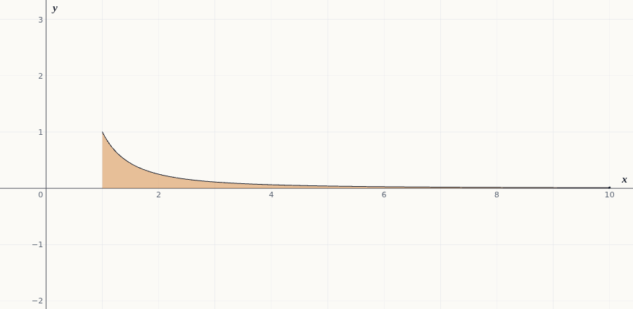
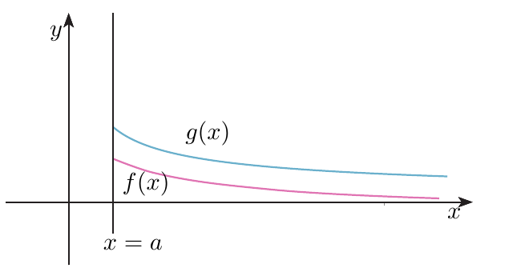

¿Puede una región que se extiende «hasta el infinito», o que se dispara hacia arriba junto a una asíntota, tener un área finita? A veces sí. Aprenderás a definir esas integrales con un límite, a decidir si convergen (con la integral de referencia $\frac1{x^p}$ y los criterios de comparación) y a reconocer enseguida de qué especie es cada una.
Libro oficial: Cálculo para Ingenieros, §6.5.2 (pp. 271-278)Ejercicios: E Ej. 6.42–6.48Examen: 6 problemas de X (+2 afines)⏱ ~4 h de estudio
U oficial
S Stewart
L Larson
E ejercicios
X exámenes
P propio
— pasa el ratón (o toca) por cada etiqueta para ver libro y página; en pantallas anchas aparecen en el margen derecho.
La idea del tema en una frase
La integral de Riemann está pensada para funciones acotadas en intervalos acotados. Si falla una de las dos cosas, no se puede aplicar la definición, pero sí se puede acercarse con un límite: calcular la integral hasta un extremo $M$ (o $c$) y ver si el resultado se estabiliza cuando $M\to\infty$ (o $c$ se acerca a la asíntota). Si se estabiliza, esa es el área; si crece sin tope o no se decide, la integral diverge.
Si solo tienes un rato, llévate esto. El resto de la página lo desarrolla con ejemplos y ejercicios.
Método en 4 pasos
Clasifica con dos comprobaciones por separado: ¿algún límite de integración es $\pm\infty$? (primera especie); ¿$f$ deja de estar acotada en algún punto de $[a,b]$, extremo o interior? (segunda). Las dos a la vez: tercera.
Parte la integral si hay más de un punto problemático o si la asíntota es interior, para que cada trozo tenga uno solo.
Si hay primitiva: Barrow en el trozo «bueno» ($[a,M]$ o $[c,b]$) y límite. Si no la hay (o solo piden el carácter): compara con $\frac1{x^p}$ por desigualdad o por límite del cociente.
Concluye: la integral completa converge solo si convergen todos los trozos; con que uno diverja, diverge.
Qué hago según lo que veo
¿Un extremo infinito y $f$ acotada? $\to$ primera especie: $\lim_{M\to\infty}\int_a^Mf$.
¿Denominador que se anula en un extremo? $\to$ segunda especie: $\lim_{c\to\text{extremo}}$ del trozo que queda.
¿Se anula dentro del intervalo? $\to$ asíntota interior: partir en ese punto.
¿Se anula en un punto pero $f$ tiene límite finito ($\frac{\operatorname{sen}x}x$ en $0$)? $\to$ no es impropia.
¿Solo piden «converge o diverge»? $\to$ referencia $\frac1{x^p}$: en el infinito converge si $p>1$; cerca de un punto, si $p<1$.
Fórmulas y enunciados, con su «cuándo se usa»
Fórmula o enunciado
Cuándo se usa
$\int_a^\infty f=\lim_{M\to\infty}\int_a^Mf$
Primera especie, $f$ continua y acotada (Def. 6.9, U p.272).
$\int_a^bf=\lim_{c\to a^+}\int_c^bf$ (o $\lim_{c\to b^-}\int_a^c$)
Segunda especie con el problema en un extremo (Def. 6.10, U p.275).
$\lim_{x\to a}\frac{f}{g}=l\in(0,\infty)$: mismo carácter
Comparación por límite, con $f,g$ equivalentes (U p.278).
$f\to0$ es necesaria, no suficiente
Descartar con $\frac1x$ la idea de que «si tiende a $0$, converge» (U p.274).
Qué cae
En los exámenes resueltos hay 6 problemas de este tema: todos piden clasificar la integral (primera, segunda o tercera especie) y justificarlo, y la mitad pide además el valor. En el libro de ejercicios son E 6.42-6.48. La comparación de convergencia no aparece en X, pero sí en E 6.47-6.48. Tabla por tipo: pestaña Examen.
U pp.272-278P
Camino de estudio: elige tu nivel
Empieza por «Mínimo»; luego «Completo» y, para nota alta, «Reto». Marca cada ejercicio al terminarlo.
Las definiciones de primera y segunda especie (2, 3), las integrales de referencia $\frac1{x^p}$, el criterio de comparación (5) y el mapa de decisión (6).
Un ejercicio de cada tipo:
E 6.42 (qué especies caben), E 6.43 (primera especie con valor), E 6.46 (segunda especie con valor), E 6.47 (comparación por límite), propio 3 (asíntota interior) y los exámenes X4 (clasificar y calcular), X5 (partes) y X6 (tercera especie).
E 6.42-6.48, los 6 exámenes, los ejemplos propios y todas las prácticas.
🟣 Reto · ≈ +1 h
E 6.44 (la sucesión no basta), E 6.48 (función Gamma), propio 2 (la frontera $\frac1{x(\ln x)^q}$), propio 4, tipo C (punto evitable) y las prácticas ★★.
Verás solo lo esencial; desmarca para ver todo.
0Antes de empezar U p.271
Lo que vas a aprender. qué debes saber antes de empezar (Barrow, primitivas, límites en el infinito y L'Hôpital, función acotada) y qué se pide en los ejercicios y en el examen.
Qué necesitas saber ya
Regla de Barrow y primitivas (tema 6.2 y tema 6.3): casi todas las integrales de este tema se resuelven con una primitiva y un límite.
Límites en el infinito y L'Hôpital ($\frac\infty\infty$ y $0\cdot\infty$; tema 2.3) y límites laterales (tema 1.4).
Función acotada y asíntota vertical (tema 1.4): decidir la especie depende de ello.
Series (tema 1.3): el criterio de comparación de las integrales impropias es el mismo que el de las series.
Mapa del Tema 6 completo (este es su último apartado)
Tema 6 · Integral de Riemann
Apartado
Qué resuelve
Resumen
6.1 Definición de la integral de Riemann
qué es el área bajo una gráfica (sumas de Riemann), qué funciones son integrables
integrar en intervalos no acotados o con funciones no acotadas
este tema
Mapa del tema: qué se pide en los ejercicios y en el examen
Clasificar una integral: ¿es impropia? ¿de primera, de segunda o de tercera especie? Hay que justificarlo con las dos comprobaciones (intervalo y función). Es lo que más sale en X.
Calcular el valor con la definición: primitiva, Barrow en el intervalo recortado y límite.
Decidir si converge sin calcularla, con las integrales de referencia $\frac1{x^p}$, $e^{-kx}$ y los criterios de comparación (U pp.277-278). En X no hay preguntas de este tipo, pero es materia de U y sale en E 6.47-6.48.
Detectar el punto malo dentro del intervalo y no aplicar Barrow «a ciegas».
1Por qué hacen falta las integrales impropias U pp.271-272
Lo que vas a aprender. por qué hacen falta las integrales impropias, sus dos causas (intervalo no acotado y función no acotada) y que «impropia» no significa «divergente».
Cómo lo reconoces: un límite de integración es $\pm\infty$, o la función se dispara (denominador que se anula) en algún punto del intervalo.
Qué haces: sustituyes el extremo problemático por $M$ (o por $c$, cerca del punto malo), integras como siempre y miras el límite.
Piensa en una pared que se va estrechando: cada metro de largo es más bajo que el anterior. Pintar «toda» la pared, que no se acaba nunca, ¿necesita infinita pintura? Depende de lo deprisa que se estreche. Si baja rápido (como $\frac1{x^2}$), la pintura total es finita; si baja despacio (como $\frac1x$), no alcanza ninguna cantidad. Lo mismo ocurre con una región muy alta pero muy estrecha, pegada a una asíntota vertical.
U lo resume así: hasta ahora se han integrado funciones acotadas sobre intervalos acotados, pero a menudo hace falta integrar sobre intervalos no acotados o funciones no acotadasU p.271. Eso da dos causas de «impropiedad», que se estudian siempre por separado:
Las dos causas y el nombre de la integral
Causa
Ejemplo
Especie
un límite de integración es $\pm\infty$ (intervalo no acotado)
$\displaystyle\int_1^\infty\frac{dx}{x^2}$
primera (Def. 6.9)
la función no está acotada en el intervalo (asíntota vertical)
$\displaystyle\int_0^1\frac{dx}{\sqrt x}$
segunda (Def. 6.10)
las dos a la vez
$\displaystyle\int_0^\infty\ln x\,dx$
tercera (se parte)
Las definiciones exactas están en los apartados 2 y 3. U pp.272-275
Ejemplo 6.36 de U · ¿Es finita el área bajo $\frac1{x^2}$ entre $x=1$ y $x=\infty$?
Hasta $t$ el área es una integral ordinaria: $\displaystyle\int_1^t\frac{dx}{x^2}=\Big[-\frac1x\Big]_1^t=1-\frac1t$. Para $t=10,100,1000$ da $\frac9{10},\ \frac{99}{100},\ \frac{999}{1000}$: parece que tiende a $1$. Y, de hecho, $\displaystyle\lim_{t\to\infty}\Big(1-\frac1t\Big)=1$.
Puedes verlo moviendo $M$ en el interactivo del apartado 4 (primera especie, $p=2$): el área crece con $M$ pero se queda por debajo de $1$. U Fig. 6.4, p.272
U p.272
Error típico
Pensar que una región infinita «tiene que» tener área infinita (o, al revés, que «impropia» significa «divergente»). Impropia solo indica cómo se define la integral (con un límite); después puede converger o no.
2Primera especie: intervalos no acotados U pp.272-274
Lo que vas a aprender. la definición de primera especie (intervalos no acotados), cómo se extiende a $(-\infty,b]$ y a $\mathbb R$, las integrales de referencia $\frac1{x^p}$ y $e^{-kx}$, y por qué $f\to0$ no basta.
Cómo lo reconoces: un extremo es $\pm\infty$ y $f$ es continua y acotada.
Qué haces: Barrow en $[a,M]$ y límite $M\to\infty$; si el intervalo es $\mathbb R$, partes en un punto y estudias las dos mitades por separado.
Definición 6.9 · Integral impropia de primera especie
Si $f:[a,\infty)\to\mathbb R$ es una función continua y acotada,
$$\int_a^\infty f(x)\,dx=\lim_{M\to\infty}\int_a^M f(x)\,dx.$$
Si el límite es un número real, la integral es convergente; en otro caso, divergente.
U p.272
Extensiones a $(-\infty,b]$ y a $\mathbb R$
En $(-\infty,b]$: $\displaystyle\int_{-\infty}^b f=\lim_{M\to-\infty}\int_M^b f$. En todo $\mathbb R$ se parte en un número real $c$:
$$\int_{-\infty}^{\infty}f=\int_{-\infty}^cf+\int_c^\infty f,$$
que «es convergente si ambas lo son y es divergente si alguna lo es».
U p.274
Ejemplos 6.37 y 6.38 de U · $\int_1^\infty\frac{dx}{x^p}$ (la integral modelo)
Estudia, según $p$, si $\displaystyle\int_1^\infty\frac{dx}{x^p}$ converge.
$p=1$ (Ej. 6.37): $\displaystyle\int_1^M\frac{dx}x=\ln M-\ln1=\ln M\to\infty$. Diverge. (Aunque $\frac1x\to0$, no baja lo bastante deprisa.)
Los dos convergen, luego la integral converge y vale $\frac\pi2+\frac\pi2=\pi$.
U p.274S p.522
Error típico
Calcular $\displaystyle\lim_{M\to\infty}\int_{-M}^{M}f$ con un solo límite simétrico. Para $f(x)=x$ da $0$, pero $\int_0^\infty x\,dx$ diverge, así que $\int_{-\infty}^\infty x\,dx$ diverge según la definición. Lo mismo ocurre con $\int_{-1}^1\frac{dx}x$ y el límite simétrico $\int_{-1}^{-\varepsilon}+\int_\varepsilon^1=0$ (propio 3). Cada extremo problemático lleva su propio límite, con letras distintas ($M$ y $N$), independientes.
Condición necesaria de convergencia (solo para descartar)
Una condición necesaria para que converja $\int_a^{+\infty}f$ es que $\displaystyle\lim_{x\to\infty}f(x)=0$, siempre que ese límite exista. Es decir: si el límite existe y no es $0$, diverge. Si es $0$, no se sabe nada ($\frac1x\to0$ y diverge).
Ejemplo: en $\int_1^\infty\frac x{x+1}dx$ el integrando tiende a $1\ne0$, luego diverge. (Comprobación: $\int_1^M\big(1-\frac1{x+1}\big)dx=M-1-\ln\frac{M+1}2\to\infty$.)
U p.274
Truco de examen
Cambiar el extremo «bueno» no cambia el carácter: $\int_a^\infty f$ e $\int_{a'}^\infty f$ difieren en $\int_a^{a'}f$, que es una integral ordinaria (un número). Por eso $\int_2^\infty\frac{dx}{x^2}$ converge igual que $\int_1^\infty\frac{dx}{x^2}$.
propio
3Segunda y tercera especie: funciones no acotadas U pp.275-276
Lo que vas a aprender. la segunda especie (funciones no acotadas en un extremo o dentro del intervalo) y la tercera (las dos causas a la vez), y por qué hay que partir.
Cómo lo reconoces: el intervalo es acotado pero $f\to\pm\infty$ junto a un punto (un denominador que se anula en el intervalo).
Qué haces: integras hasta una distancia $c$ del punto malo y haces $c\to$ punto; si el punto es interior, o hay además un extremo infinito, partes para que cada trozo tenga un solo problema.
Ahora el intervalo es acotado, pero $f$ se dispara a $\pm\infty$ junto a un punto (asíntota vertical): se integra hasta una distancia $c$ de él y se mira qué pasa cuando $c$ se acerca, con el mismo criterio de antes.
Definición 6.10 · Integral impropia de segunda especie
Si $f:(a,b]\to\mathbb R$ es una función continua y no acotada,
$$\int_a^bf(x)\,dx=\lim_{c\to a^+}\int_c^bf(x)\,dx.$$
Convergente si el límite es un número real; divergente en otro caso. Si la asíntota está en $b$ (función en $[a,b)$): $\displaystyle\int_a^bf=\lim_{c\to b^-}\int_a^cf$.
U pp.275-276
Asíntota interior y tercera especie
Si $f$ tiene una asíntota vertical $x=c$ con $c\in[a,b]$ dentro del intervalo, la integral se divide en dos de segunda especie, $\int_a^c+\int_c^b$, y converge solo si convergen las dos U pp.274, 276. Si, además, un extremo es $\pm\infty$ y la función no está acotada, es de tercera especie: «la dividimos en la suma de una integral de cada especie» U p.275.
Ejemplo 6.41 de U · $\int_0^1\frac{dx}{x^p}$ (la otra integral modelo)
Estudia la convergencia de $\displaystyle\int_0^1\frac{dx}{x^p}$ según $p$.
$p\le0$: $\frac1{x^p}=x^{-p}$ es continua en $[0,1]$: integral ordinaria, no es impropia.
$p=1$: $\displaystyle\int_c^1\frac{dx}x=-\ln c\to+\infty$ cuando $c\to0^+$: diverge.
$p>0$, $p\ne1$: $\displaystyle\int_c^1x^{-p}dx=\frac1{1-p}\big(1-c^{1-p}\big)$. Si $p<1$: $c^{1-p}\to0$ y el límite es $\frac1{1-p}$: converge. Si $p>1$: $c^{1-p}=\frac1{c^{p-1}}\to\infty$: diverge.
Otra vía (U): con $t=\frac1x$, $\int_0^1\frac{dx}{x^p}=\int_1^\infty\frac{dt}{t^{2-p}}$, que converge $\iff2-p>1\iff p<1$ (Ej. 6.38): una de segunda especie se convierte en una de primera.
Conclusión: $\displaystyle\int_0^1\frac{dx}{x^p}$ converge $\iff p<1$, con valor $\frac1{1-p}$.
U p.275L p.572
Regla mnemotécnica
En el infinito hace falta que $f$ baje deprisa ($p>1$); cerca de $0$ basta que suba despacio ($p<1$); $p=1$ ($\frac1x$) diverge en los dos sitios.
propio
Ejemplo 6.42 de U · $\int_{-1}^{1}\frac{dx}{x^2}$ (asíntota en el interior)
Mirar la continuidad: $\frac1{x^2}$ no está definida en $x=0\in[-1,1]$ y $\displaystyle\lim_{x\to0}\frac1{x^2}=\infty$. Hay una asíntota dentro del intervalo.
Partir en $0$: $\int_{-1}^1=\int_{-1}^0+\int_0^1$.
Trozo derecho: $\displaystyle\lim_{c\to0^+}\Big[-\frac1x\Big]_c^1=\lim_{c\to0^+}\Big(-1+\frac1c\Big)=\infty$: diverge. (El izquierdo también; con uno que diverja ya basta.)
Conclusión: diverge.
Si se aplicara Barrow «a ciegas» saldría $\big[-\frac1x\big]_{-1}^1=-1-1=-2$, un número negativo como área de una función positiva. Es falso porque $\frac1{x^2}$ no es continua en $[-1,1]$. U lo advierte: «antes de resolver una integral definida hay que comprobar la continuidad del integrando»; busca ceros del denominador dentro de $[a,b]$ antes de aplicar Barrow.
U p.276S p.524L p.572
Error típico
Un punto donde $f$ no está definida pero tiene límite finito (como $\frac{\operatorname{sen}x}{x}$ en $0$) no es causa de impropiedad: $f$ sigue acotada cerca de él. Antes de decir «segunda especie», calcula el límite de $f$ en el punto sospechoso.
4Ver cómo se estabiliza (o no) el área propio
Lo que vas a aprender. a ver cómo evoluciona el área acumulada cuando $M$ crece (o $c$ se acerca al punto malo) y por qué unas integrales se estabilizan y otras no.
Cómo lo reconoces: dudas de si el área «se acaba» o sigue creciendo.
Qué haces: mueves $M$ (o $c$) en el interactivo y comparas el área acumulada con el valor límite $\frac1{p-1}$ (primera especie) o $\frac1{1-p}$ (segunda).
Ejemplo mínimo: $p=2$ en $[1,\infty)$: con $M=1000$ el área es $0{,}999$, y el valor límite es $1$.
Prueba el interactivo con $\frac1{x^p}$: en primera especie sube $M$ hasta $1000$ y mira cuánto falta para el valor límite $\frac1{p-1}$ (con $p=2$ casi nada; con $p=1{,}2$ se queda lejos incluso con $M=1000$; con $p=1$ el área sigue creciendo sin parar, aunque despacio). En segunda especie baja $c$ hacia $0$: con $p<1$ el área se estabiliza; con $p\ge1$ la «pared» pegada al eje $y$ no deja de aportar área. La tercera opción es el ejercicio E 6.44: el área acumulada oscila.

Interactivo propio. Primera especie con $p=2$ y $M=10$: área $0{,}9$ frente al límite $1$ (U Ej. 6.36). Segunda especie con $p=\frac12$ y $c=0{,}01$: área $1{,}8$ frente al límite $2$. Con $p=1$ el área hasta $M=1000$ es $\ln1000\approx6{,}91$ y sigue creciendo. En la tercera opción, $F(M)=\frac{\operatorname{sen}(2\pi M)}{2\pi}$ vale $0$ en los enteros pero $\pm\frac1{2\pi}\approx\pm0{,}159$ en $M=k+\frac14$, $k+\frac34$ (E 6.44; aquí $M$ llega hasta $4$ y el exponente $p$ no interviene). La recta vertical discontinua marca el extremo móvil. La parte de la gráfica que se sale de la ventana (por la derecha en primera especie, por arriba en segunda) no se dibuja, pero sí cuenta en el valor numérico. propio
5Convergencia y divergencia por comparación U pp.277-278
Lo que vas a aprender. a decidir si una integral converge sin calcular su primitiva, comparándola con $\frac1{x^p}$ por desigualdad o por límite del cociente.
Cómo lo reconoces: no hay primitiva sencilla (o no hace falta) y solo piden si converge.
Qué haces: eliges una $g$ conocida ($\frac1{x^p}$, $e^{-kx}$) y comparas: $f\le g$ con $g$ convergente, o $f\ge g$ con $g$ divergente, o el límite de $\frac fg$ en el punto problemático.
Ejemplo mínimo: $\int_1^\infty\frac{dx}{x^2+1}$: como $\frac1{x^2+1}\le\frac1{x^2}$ y $\int_1^\infty\frac{dx}{x^2}$ converge, converge.
Idea intuitiva
Muchas integrales no tienen primitiva elemental, pero basta saber si convergen. Es como comparar el contenido de dos depósitos: si el depósito grande es finito, el pequeño que cabe dentro también; si el pequeño ya es infinito, el grande también. Se compara con una integral que sí conocemos ($\frac1{x^p}$, $e^{-kx}$).
Criterio de comparación (primera especie)
Sean $0\le f(x)\le g(x)$ continuas para $x\in[a,\infty)$.
Si $\displaystyle\int_a^\infty g$ converge, entonces también converge $\displaystyle\int_a^\infty f$.
Si $\displaystyle\int_a^\infty f$ diverge, entonces también diverge $\displaystyle\int_a^\infty g$.
Hace falta que $f$ y $g$ tomen valores mayores que $0$ (en otro caso, valor absoluto y otras definiciones). Para segunda especie hay un criterio equivalente: con $0\le f\le g$ en $(a,b]$, si $\int_a^bg$ converge, converge $\int_a^bf$; si $\int_a^bf$ diverge, diverge $\int_a^bg$.
U pp.277-278

Comparación entre las áreas bajo $f(x)$ y $g(x)$ en $[a,\infty)$: la de $f$ queda dentro de la de $g$. U p.277
Comparación mediante límite
Sean $f(x)\ge0$ y $g(x)>0$ continuas para $x\in[a,\infty)$ y $\displaystyle\lim_{x\to\infty}\frac{f(x)}{g(x)}=l$.
(i) Si $l\in(0,\infty)$, $\int_a^\infty f$ y $\int_a^\infty g$ son ambas convergentes o ambas divergentes.
(ii) Si $l=0$ y $\int_a^\infty g$ converge, también converge $\int_a^\infty f$.
(iii) Si $l=\infty$ y $\int_a^\infty g$ diverge, también diverge $\int_a^\infty f$.
Para segunda especie con la asíntota en $a$, se cambia $\lim_{x\to\infty}$ por $\lim_{x\to a^+}$.
En $\pm\infty$: quedarse con lo que crece más deprisa. En polinomios y raíces, la mayor potencia: $\sqrt{x^4+x^2+1}\approx x^2$, $\sqrt{x^3+1}\approx x^{3/2}$, $\frac{2x+1}{x^3-5}\approx\frac2{x^2}$ (para $x$ grande, en $[2,\infty)$, donde $f>0$). Se toma $g=\frac1{x^q}$ con esa potencia $q$ y el cociente $f/g$ tiende a un $l\in(0,\infty)$ (caso (i)).
Exponenciales: $e^{-x}$ baja más deprisa que cualquier potencia, $\lim_{x\to\infty}x^ne^{-x}=0$ (L'Hôpital $n$ veces). Para $x^ne^{-x}$ o $e^{-x^2}$ se compara con $g=\frac1{x^2}$: límite $0$ y $\int_1^\infty\frac{dx}{x^2}$ converge (caso (ii)).
Logaritmos: $\ln x$ crece más despacio que cualquier potencia: $\frac1{\ln x}$ es «más grande» que $\frac1x$ (límite $\infty$ con $g=\frac1x$: diverge); $\frac{\ln x}{x^2}$ es «más pequeña» que $\frac1{x^{3/2}}$ (límite $0$: converge).
Cerca de $0^+$: quedarse con la menor potencia (manda cuando $x$ es pequeño): $x^3+x^2+x\approx x$. Equivalencias útiles (cada cociente tiende a $1$): $\operatorname{sen}x\approx x$, $e^x-1\approx x$, $\ln(1+x)\approx x$, $1-\cos x\approx\frac{x^2}2$.
Si el criterio «no decide» (límite $0$ con $\int g$ divergente, o límite $\infty$ con $\int g$ convergente), se prueba con otra $g$ (E 6.47).
Signo: los criterios piden $f\ge0$. Si $f\le0$ en todo el intervalo, se estudia $-f$. Si $f$ cambia de signo infinitas veces ($\operatorname{sen}x$, $\cos x$), no se pueden aplicar tal cual.
Ejemplo 6.43 de U · $\int_1^\infty\frac{dx}{\sqrt{x^4+x^2+1}}$
Qué es: $f>0$ continua y acotada en $[1,\infty)$: primera especie. No hay primitiva sencilla: se compara.
Desigualdad: quitar sumandos positivos al denominador hace la fracción mayor: $x^4+x^2+1\ge x^4\Rightarrow\sqrt{x^4+x^2+1}\ge x^2\Rightarrow f(x)\le\frac1{x^2}$.
Referencia: $\int_1^\infty\frac{dx}{x^2}$ converge ($p=2>1$). Por comparación, converge. (Su valor, $\approx0{,}8429$, es menor que $1$.)
U p.277
Ejemplo 6.44 de U · $\int_0^1\frac{dx}{\sqrt[4]{x^3+x^2+x}}$ (segunda especie)
Por qué es impropia: el denominador se anula en $x=0$ y $f\to\infty$ cuando $x\to0^+$: segunda especie.
Desigualdad en $(0,1)$: $x^3+x^2+x\ge x^3\Rightarrow f(x)\le\frac1{\sqrt[4]{x^3}}=\frac1{x^{3/4}}$.
Referencia: $\int_0^1\frac{dx}{x^{3/4}}$ converge ($p=\frac34<1$). Por comparación, converge ($\approx1{,}1882$, menor que $4$).
La mejor comparación sería con $\frac1{x^{1/4}}$ (cerca de $0$ domina el sumando $x$); pero basta una $g$ mayor cuya integral converja, aunque sea una cota «floja».
U p.278
Ejemplo 6.45 de U · $\int_0^\infty\frac{dx}{e^x+1}$ (comparación por límite)
Idea: para $x$ grande, $e^x+1\approx e^x$, luego $f\approx e^{-x}$. Se toma $f=\frac1{e^x+1}\ge0$, $g=e^{-x}>0$, continuas en $[0,\infty)$.
Caso (i) con $l=1\in(0,\infty)$: mismo carácter que $\int_0^\infty e^{-x}dx=1$, que converge. Converge.
(Extra: valor.) $\frac{e^{-x}}{1+e^{-x}}=-\frac{(1+e^{-x})'}{1+e^{-x}}$, primitiva $-\ln(1+e^{-x})$: valor $0-(-\ln2)=\ln2\approx0{,}693$.
U p.278
Errores típicos con los criterios
Usar la desigualdad al revés: $f\ge g$ con $\int g$ convergente no dice nada.
Con límite $l=0$, concluir «diverge» porque $\int g$ diverge: con $l=0$ solo se transmite la convergencia.
Calcular el límite del cociente en el punto que no es el problemático ($x\to0$ en vez de $x\to\infty$, o al revés).
Comparar con $\frac1{x^3}$ olvidando una raíz: $\frac1{\sqrt{x^3+1}}\le\frac1{x^3}$ solo se cumple en $[1;1{,}174]$ y es falso para $x$ grande (desde $x\approx1{,}17$).
Truco de examen
Receta general del tema.
Clasificar. (a) ¿Algún límite de integración es $\pm\infty$? $\Rightarrow$ primera especie. (b) ¿Se anula un denominador, hay $\ln$ en $0$…? Calcula el límite de $f$ allí: si es $\pm\infty$, $f$ no está acotada $\Rightarrow$ segunda especie. Las dos cosas $\Rightarrow$ tercera. Ninguna: integral ordinaria, Barrow directamente.
Partir en los puntos problemáticos, de modo que cada trozo tenga un solo problema y en un extremo. La integral total converge solo si convergen todos los trozos.
Si piden el valor: primitiva $F$, Barrow en el intervalo «recortado» y límite: $\lim_{M\to\infty}\big(F(M)-F(a)\big)$ o $\lim_{c\to a^+}\big(F(b)-F(c)\big)$. Real $\Rightarrow$ converge; $\pm\infty$ o no existe $\Rightarrow$ diverge.
Si solo piden el carácter (o no hay primitiva): comprobar el signo y comparar con $\frac1{x^p}$ o $e^{-kx}$ (desigualdad o límite del cociente).
6Cómo decidir qué hacer: mapa del tema P
Lo que vas a aprender. a decidir qué hacer según lo que te dan y lo que te piden (clasificar, calcular o solo decidir si converge), con un mapa de decisión paso a paso.
Léelo de arriba abajo: en cada pregunta, «no» baja a la siguiente y «sí» te lleva a la acción de la derecha. Lo que más puntos se pierde: no ver una asíntota interior y aplicar Barrow a ciegas, declarar impropio un punto evitable (como $\frac{\operatorname{sen}x}x$ en $0$), invertir los casos de $p$ (en el infinito converge si $p>1$; cerca de un punto, si $p<1$) y creer que $f\to0$ basta para converger. Al final, comprueba el signo: si $f>0$, el valor no puede ser negativo U pp.272-278.
Ver la tabla con el detalle de cada caso y la receta completa
Veo…
Hago…
Ojo con…
Límite $\pm\infty$ y $f$ continua y acotada
Primera especie: $\lim_{M\to\infty}\int_a^Mf$ (U p.272)
Comprobar que $f$ es acotada de verdad en $[a,\infty)$
Intervalo $\mathbb R$ o $(-\infty,b]$
Partir en un punto y dos límites independientes (U p.274)
$\lim_{M\to\infty}\int_{-M}^M$ no vale (X6, quiz 8)
$f\to\pm\infty$ en un extremo
Segunda especie: $c\to$ extremo en el trozo que queda (U p.275)
No usar Barrow en el intervalo completo
$f\to\pm\infty$ dentro del intervalo
Partir en ese punto; converge solo si convergen los dos trozos (U p.276)
E 6.42 y propio 3: $\frac1{x^2}$ en $[-1,1]$ diverge
Extremo infinito y función no acotada
Tercera especie: partir en un punto intermedio (margen de U p.275)
Un trozo que diverja basta (X6)
Denominador $0$ pero $f$ con límite finito
No es impropia: es una integral ordinaria
$\frac{\operatorname{sen}x}x$ en $0$ (tipo C)
$\frac1{x^p}$ en el infinito o cerca de $0$
Referencia: $p>1$ (infinito) o $p<1$ (cerca de un punto) (U pp.273, 275)
$p=1$ diverge en los dos sitios
«¿Converge?» sin primitiva
Comparación directa $f\le g$ (U p.277)
Estar por debajo de una divergente no dice nada
$f$ y $g$ equivalentes
Límite del cociente en el punto problemático (U p.278)
$l=0$ solo sirve si $\int g$ converge
Receta general del tema:
Clasificar: intervalo ($\pm\infty$ ?) y función (¿no acotada? ¿dónde? ¿extremo o interior? ¿evitable?), por separado.
Partir para que cada trozo tenga un solo punto problemático.
Con primitiva: Barrow en el trozo recortado y límite; $\infty-\infty$ o $0\cdot\infty$ se resuelven juntando logaritmos o con L'Hôpital.
Sin primitiva: comparar con $\frac1{x^p}$ (desigualdad o límite del cociente).
Concluir trozo a trozo y comprobar el signo.
7Practica P
Lo que vas a aprender. a resolver tú solo un ejemplo de cada tipo de pregunta de integrales impropias. Intenta cada uno antes de abrir la pista; empieza por los ★ (los ★★ son ampliación).
Ahora hazlo tú
Integrales impropias: (1) clasifica: ¿algún límite es $\pm\infty$? (primera especie) ¿$f$ deja de estar acotada en algún punto de $[a,b]$, extremo o interior? (segunda); las dos, tercera; (2) si hay más de un punto problemático, parte la integral para que cada trozo tenga uno solo; (3) si hay primitiva: Barrow en el trozo «bueno
Clasificar: ¿es impropia y de qué especie?
★ Básico Práctica a1 · clasificar cuatro integrales sin calcularlas P
Di si cada integral es impropia y, si lo es, de qué especie (no hace falta calcularlas): a) $\displaystyle\int_2^\infty\frac{dx}{x^2-1}$; b) $\displaystyle\int_0^3\frac{dx}{x-1}$; c) $\displaystyle\int_0^\pi\frac{\operatorname{sen}x}x\,dx$; d) $\displaystyle\int_1^\infty\frac{dx}{x\sqrt{x-1}}$.
Pista
Haz siempre las dos comprobaciones por separado: ¿algún límite de integración es infinito? ¿hay algún punto del intervalo (extremo o interior) donde la función se dispare? En c), calcula el límite de $\frac{\operatorname{sen}x}x$ en $0$.
Ver solución
Método: primera especie = intervalo no acotado con $f$ continua y acotada (Def. 6.9, U p.272); segunda especie = intervalo acotado con $f$ no acotada (Def. 6.10, U p.275); las dos causas a la vez = tercera especie (margen de U p.275).
a) Intervalo: el límite superior es $\infty$: hay primera especie. Función: $x^2-1=0\iff x=\pm1$, ninguna en $[2,\infty)$; allí $x^2-1\ge3$, luego $0<f(x)\le\frac13$: continua y acotada. Solo primera especie.
b) Intervalo: $[0,3]$ es acotado. Función: el denominador se anula en $x=1$, que está dentro de $(0,3)$, y $\frac1{x-1}\to\pm\infty$ al acercarse a $1$. Segunda especie con asíntota interior: para estudiarla habría que partir en $1$ (U p.276).
c) Intervalo: $[0,\pi]$ es acotado. Función: en $x=0$ no está definida, pero $\lim_{x\to0}\frac{\operatorname{sen}x}x=1$: definiendo $f(0)=1$ es continua en $[0,\pi]$, luego acotada. No es impropia: es una integral ordinaria (que no tenga primitiva elemental no la hace impropia).
d) Intervalo: el límite superior es $\infty$. Función: cuando $x\to1^+$, $x\sqrt{x-1}\to0^+$ y $f\to+\infty$: no acotada en el extremo $1$. Las dos causas: tercera especie (se partiría en, p. ej., $x=2$).
Resultado: a) primera especie; b) segunda especie (asíntota interior en $x=1$); c) no es impropia; d) tercera especie
★★ Medio Práctica a2 · $\int_0^a\frac{dx}{x^2-4x+3}$ según $a$, un punto que no es problema y una de tercera especie P
a) Para $a>0$, ¿cuándo es impropia $\displaystyle\int_0^a\frac{dx}{x^2-4x+3}$ y de qué especie? b) Clasifica $\displaystyle\int_0^1\frac{1-\cos x}{x^2}\,dx$. c) Clasifica $\displaystyle\int_0^\infty\frac{\ln x}{1+x^2}\,dx$.
Pista
a) Factoriza el denominador y mira si sus raíces caen en $[0,a]$. b) El denominador se anula en $0$, pero ¿qué hace el cociente? (L'Hôpital). c) Mira los dos extremos.
Ver solución
a) Raíces: $x^2-4x+3=(x-1)(x-3)$, que se anula en $1$ y en $3$. El intervalo $[0,a]$ es siempre acotado: solo puede haber segunda especie.
a) Si $0<a<1$: $[0,a]$ no contiene ni $1$ ni $3$; $f$ es continua en un intervalo cerrado y acotado, luego acotada (Weierstrass): integral ordinaria.
a) Si $a\ge1$: $x=1$ está en $[0,a]$ y $\lvert f(x)\rvert\to\infty$ al acercarse a $1$ (por ejemplo, $\lim_{x\to1^-}\frac1{(x-1)(x-3)}=+\infty$, porque $(x-1)(x-3)\to0^+$). Segunda especie: con el problema en el extremo si $a=1$; con asíntota interior si $a>1$ (y otra más en $3$ si $a\ge3$), y entonces se parte (U p.276).
b) ¿Es acotada cerca de $0$? $\frac{1-\cos x}{x^2}$ es $\frac00$; L'Hôpital (U pp.82-84) dos veces: $\lim_{x\to0}\frac{\operatorname{sen}x}{2x}=\lim_{x\to0}\frac{\cos x}2=\frac12$. Definiendo $f(0)=\frac12$, $f$ es continua en $[0,1]$: no es impropia.
c) Las dos causas: el límite superior es $\infty$ (primera especie) y $\lim_{x\to0^+}\frac{\ln x}{1+x^2}=-\infty$ (no acotada en $0$, segunda especie). Tercera especie (margen de U p.275). Que $f$ sea negativa cerca de $0$ no cambia la clasificación.
Resultado: a) si $0<a<1$ no es impropia; si $a\ge1$, segunda especie; b) no es impropia ($f\to\frac12$); c) tercera especie
Primera especie por la definición
★ Básico Práctica b1 · $\int_1^\infty\frac{dx}{(2x+1)^2}$ y $\int_0^\infty\frac{dx}{x^2+4}$ P
Calcula, usando la definición: a) $\displaystyle\int_1^\infty\frac{dx}{(2x+1)^2}$; b) $\displaystyle\int_0^\infty\frac{dx}{x^2+4}$.
Pista
Integra en $[a,M]$ con Barrow y después haz $M\to\infty$. a) Potencia de $2x+1$: ajusta el $2$. b) Saca el $4$ para tener $1+\left(\frac x2\right)^2$.
Ver solución
a) Clasificar: $2x+1\ge3$ en $[1,\infty)$, así que $0<f\le\frac19$: continua y acotada; solo falla el $\infty$. Primera especie (Def. 6.9, U p.272): $\int_1^\infty f=\lim_{M\to\infty}\int_1^Mf$.
a) Primitiva (tabla, $\int f^af'$ con $a=-2$, U p.248): $\int(2x+1)^{-2}dx=\frac12\cdot\frac{(2x+1)^{-1}}{-1}=-\frac1{2(2x+1)}$.
a) Barrow en $[1,M]$: $-\frac1{2(2M+1)}+\frac1{2\cdot3}=\frac16-\frac1{2(2M+1)}$.
a) Límite: $\frac1{2(2M+1)}\to0$ cuando $M\to\infty$; la integral converge y vale $\frac16$.
b) Clasificar: $0<\frac1{x^2+4}\le\frac14$, continua: primera especie.
b) Primitiva: $x^2+4=4\left[1+\left(\frac x2\right)^2\right]$; con $f=\frac x2$, $f'=\frac12$: $\frac1{x^2+4}=\frac12\cdot\frac{f'}{1+f^2}$, y la tabla da $\frac12\operatorname{arctg}\frac x2$.
b) Barrow y límite: $\int_0^M\frac{dx}{x^2+4}=\frac12\operatorname{arctg}\frac M2-0\to\frac12\cdot\frac\pi2=\frac\pi4$ (porque $\lim_{u\to\infty}\operatorname{arctg}u=\frac\pi2$). Converge.
Resultado: a) $\frac16$; b) $\frac\pi4$
★★ Medio Práctica b2 · $\int_{-\infty}^\infty\frac{dx}{x^2+2x+5}$ partiendo en dos y $\int_0^\infty e^{-x}\operatorname{sen}x\,dx$ P
Calcula: a) $\displaystyle\int_{-\infty}^{\infty}\frac{dx}{x^2+2x+5}$; b) $\displaystyle\int_0^\infty e^{-x}\operatorname{sen}x\,dx$.
Pista
a) Con los dos límites infinitos hay que partir en un punto (el más cómodo es $-1$, tras completar el cuadrado) y hacer dos límites independientes. b) Partes dos veces (integral cíclica); en el límite, $e^{-M}$ multiplica a algo acotado.
Ver solución
a) Completar el cuadrado: $x^2+2x+5=(x+1)^2+4>0$: $f$ continua y acotada en $\mathbb R$. Primitiva (como en pr-b1 b): $\frac12\operatorname{arctg}\frac{x+1}2$.
a) Partir (U p.274): $\int_{-\infty}^\infty f=\int_{-\infty}^{-1}f+\int_{-1}^\infty f$, y la integral converge solo si convergen las dos.
a) Trozo derecho: $\lim_{N\to\infty}\left(\frac12\operatorname{arctg}\frac{N+1}2-\frac12\operatorname{arctg}0\right)=\frac12\cdot\frac\pi2=\frac\pi4$.
a) Trozo izquierdo: $\lim_{M\to-\infty}\left(0-\frac12\operatorname{arctg}\frac{M+1}2\right)=-\frac12\cdot\left(-\frac\pi2\right)=\frac\pi4$. Las dos convergen: total $\frac\pi4+\frac\pi4=\frac\pi2$.
b) Clasificar: $\lvert e^{-x}\operatorname{sen}x\rvert\le1$ y es continua: primera especie. (Cambia de signo, pero la definición por límite no exige $f\ge0$.)
b) Primitiva por partes (U p.252): con $I=\int e^{-x}\operatorname{sen}x\,dx$, $u=\operatorname{sen}x$, $v'=e^{-x}$: $I=-e^{-x}\operatorname{sen}x+\int e^{-x}\cos x\,dx$. Otra vez, $u=\cos x$, $v'=e^{-x}$: $\int e^{-x}\cos x\,dx=-e^{-x}\cos x-I$. Despejando: $2I=-e^{-x}(\operatorname{sen}x+\cos x)$, $I=-\frac{e^{-x}(\operatorname{sen}x+\cos x)}2$.
b) Barrow en $[0,M]$: $-\frac{e^{-M}(\operatorname{sen}M+\cos M)}2+\frac12$.
b) Límite: $\lvert\operatorname{sen}M+\cos M\rvert\le2$ y $e^{-M}\to0$: el producto tiende a $0$ (algo que tiende a $0$ por algo acotado). Converge y vale $\frac12$.
Resultado: a) $\frac\pi2$; b) $\frac12$
Segunda especie por la definición
★ Básico Práctica c1 · $\int_0^4\frac{dx}{\sqrt{4-x}}$ (problema en el extremo derecho) y $\int_1^2\frac{dx}{(x-1)^2}$ P
Estudia, usando la definición, si convergen y calcula su valor cuando lo hagan: a) $\displaystyle\int_0^4\frac{dx}{\sqrt{4-x}}$; b) $\displaystyle\int_1^2\frac{dx}{(x-1)^2}$.
Pista
Localiza el punto donde la función se dispara: a) en el extremo derecho, luego $c\to4^-$; b) en el izquierdo, $c\to1^+$. Integra en el trozo donde la función sí es continua y acotada.
Ver solución
a) Clasificar: $[0,4]$ acotado; $\frac1{\sqrt{4-x}}\to+\infty$ cuando $x\to4^-$. Segunda especie con el problema en $b=4$ (versión en $[a,b)$, U p.276): $\int_0^4f=\lim_{c\to4^-}\int_0^cf$.
a) Primitiva (tabla, $\int f^af'$ con $f=4-x$, $f'=-1$, $a=-\frac12$): $\int(4-x)^{-1/2}dx=-2\sqrt{4-x}$.
a) Barrow en $[0,c]$ y límite: $-2\sqrt{4-c}+2\sqrt4=4-2\sqrt{4-c}\to4$ cuando $c\to4^-$. Converge y vale $4$.
b) Clasificar: $\frac1{(x-1)^2}\to+\infty$ cuando $x\to1^+$: segunda especie en $a=1$ (Def. 6.10, U p.275): $\int_1^2f=\lim_{c\to1^+}\int_c^2f$.
b) Barrow en $[c,2]$: primitiva $-\frac1{x-1}$; $\left(-1\right)-\left(-\frac1{c-1}\right)=\frac1{c-1}-1$.
b) Límite: cuando $c\to1^+$, $c-1\to0^+$ y $\frac1{c-1}\to+\infty$. Diverge.
Error típico: aplicar Barrow directamente en $[1,2]$ como si nada: la primitiva no existe en $x=1$ y el «resultado» no significa nada (U p.276).
Resultado: a) $4$; b) diverge ($+\infty$)
★★ Medio Práctica c2 · $\int_0^1\frac{dx}{\sqrt{1-x^2}}$ y $\int_0^1\frac{\ln x}{\sqrt x}dx$ con L'Hôpital P
Calcula, usando la definición: a) $\displaystyle\int_0^1\frac{dx}{\sqrt{1-x^2}}$; b) $\displaystyle\int_0^1\frac{\ln x}{\sqrt x}\,dx$.
Pista
a) El problema está en $x=1$; la primitiva es inmediata. b) El problema está en $0$; integra por partes con $u=\ln x$ y $v'=x^{-1/2}$. Al final aparece un límite $0\cdot\infty$: pásalo a cociente.
Ver solución
a) Clasificar: $1-x^2\to0^+$ cuando $x\to1^-$, así que $f\to+\infty$: segunda especie en $b=1$ (U p.276).
a) Primitiva y límite: $\int\frac{dx}{\sqrt{1-x^2}}=\operatorname{arcsen}x$ (tabla, U p.248). $\int_0^c=\operatorname{arcsen}c-0\to\operatorname{arcsen}1=\frac\pi2$ cuando $c\to1^-$ (el arcoseno es continuo en $1$). Converge y vale $\frac\pi2$.
b) Clasificar: $\frac{\ln x}{\sqrt x}\to-\infty$ cuando $x\to0^+$ ($\ln x\to-\infty$ y $\sqrt x\to0^+$): segunda especie en $0$ (Def. 6.10, U p.275).
b) Primitiva por partes (U p.252): $u=\ln x\Rightarrow u'=\frac1x$; $v'=x^{-1/2}\Rightarrow v=2\sqrt x$. $\int\frac{\ln x}{\sqrt x}dx=2\sqrt x\ln x-\int\frac{2\sqrt x}x\,dx=2\sqrt x\ln x-4\sqrt x$.
b) Barrow en $[c,1]$: $(0-4)-\left(2\sqrt c\ln c-4\sqrt c\right)=-4-2\sqrt c\ln c+4\sqrt c$.
b) Límite $0\cdot\infty$: $\sqrt c\ln c=\frac{\ln c}{c^{-1/2}}$ y L'Hôpital: $\lim_{c\to0^+}\frac{1/c}{-\frac12c^{-3/2}}=\lim_{c\to0^+}\left(-2\sqrt c\right)=0$. Además $4\sqrt c\to0$.
b) Resultado: converge y vale $-4$. Sentido común: $\ln x<0$ en $(0,1)$, así que el valor debe ser negativo ✓.
Resultado: a) $\frac\pi2$; b) $-4$
Integrales de referencia $\frac1{x^p}$
★ Básico Práctica d1 · tres integrales de $x^{-p}$ sin calcular primitivas P
Usa las integrales de referencia (U Ej. 6.38 y 6.41) para decidir si convergen y, si lo hacen, su valor: a) $\displaystyle\int_1^\infty\frac{dx}{x\sqrt[3]x}$; b) $\displaystyle\int_0^1\frac{dx}{x\sqrt[3]x}$; c) $\displaystyle\int_0^8\frac{dx}{\sqrt[3]x}$.
Pista
Escribe cada integrando como $\frac1{x^p}$. En el infinito converge si $p>1$ (vale $\frac1{p-1}$ desde $1$); cerca de $0$, si $p<1$ (vale $\frac1{1-p}$ en $[0,1]$). En c), el intervalo no es $[0,1]$: integra con la definición.
Ver solución
Exponente: $x\sqrt[3]x=x^{1+\frac13}=x^{4/3}$, así que en a) y b) $p=\frac43$; en c), $\sqrt[3]x=x^{1/3}$, $p=\frac13$.
a) Primera especie (U Ej. 6.38, p.273): $p=\frac43>1$, converge y vale $\frac1{p-1}=\frac1{1/3}=3$.
b) Segunda especie en $0$ (U Ej. 6.41, p.275): $p=\frac43\ge1$, diverge. La misma función: converge en el infinito y diverge en $0$.
c) Segunda especie en $0$: por la definición, $\int_c^8x^{-1/3}dx=\left[\frac32x^{2/3}\right]_c^8=\frac32\cdot4-\frac32c^{2/3}$.
c) Límite: $c^{2/3}\to0$ cuando $c\to0^+$; converge y vale $6$ (coherente con $p=\frac13<1$).
Regla para recordarlo: cerca de $0$, $\frac1{x^p}$ con $p$ pequeño sube «despacio» (área finita); en el infinito, con $p$ grande baja «deprisa» (área finita). $p=1$ diverge en los dos sitios.
Resultado: a) converge (vale $3$); b) diverge; c) converge (vale $6$)
★★ Medio Práctica d2 · $\frac1{(x-1)^p}$: trasladar la referencia con un cambio P
Para $p>0$, estudia según $p$ la convergencia de $\displaystyle\int_2^\infty\frac{dx}{(x-1)^p}$ y de $\displaystyle\int_1^2\frac{dx}{(x-1)^p}$, y su valor cuando converjan. Aplícalo a $\displaystyle\int_2^\infty\frac{dx}{(x-1)^3}$ y a $\displaystyle\int_1^2\frac{dx}{\sqrt{x-1}}$.
Pista
El cambio $t=x-1$ lleva el punto «malo» $x=1$ a $t=0$ y convierte cada integral en una de referencia. Haz el cambio en el intervalo finito ($[2,M]$ o $[c,2]$) y luego el límite.
Ver solución
Cambio (U p.251): $t=x-1$, $dt=dx$. En $[2,M]$: $x=2\Rightarrow t=1$, $x=M\Rightarrow t=M-1$; así $\int_2^M\frac{dx}{(x-1)^p}=\int_1^{M-1}\frac{dt}{t^p}$, y $M-1\to\infty$ cuando $M\to\infty$.
Primera integral: es $\int_1^\infty\frac{dt}{t^p}$ (U Ej. 6.38, p.273): converge $\iff p>1$ y vale $\frac1{p-1}$.
Segunda integral: $\frac1{(x-1)^p}\to+\infty$ cuando $x\to1^+$ (porque $p>0$): segunda especie. En $[c,2]$ el cambio da $\int_{c-1}^1\frac{dt}{t^p}$ con $c-1\to0^+$: es $\int_0^1\frac{dt}{t^p}$ (U Ej. 6.41, p.275), que converge $\iff p<1$ y vale $\frac1{1-p}$.
★ Básico Práctica e1 · $\frac1{x^3+x+1}$ por debajo y $\frac{2+\cos x}x$ por encima P
Estudia el carácter (sin calcularlas) de: a) $\displaystyle\int_1^\infty\frac{dx}{x^3+x+1}$; b) $\displaystyle\int_1^\infty\frac{2+\cos x}x\,dx$.
Pista
a) Quita sumandos positivos del denominador: la fracción crece. b) El coseno nunca baja de $-1$: acota el numerador por abajo.
Ver solución
Criterio (U p.277): si $0\le f\le g$ en $[a,\infty)$, $\int g$ converge $\Rightarrow\int f$ converge, e $\int f$ diverge $\Rightarrow\int g$ diverge. Para probar convergencia se busca una $g$ mayor que converja; para divergencia, una menor que diverja.
a) Desigualdad: en $[1,\infty)$, $x^3+x+1\ge x^3>0$, luego $0<\frac1{x^3+x+1}\le\frac1{x^3}$.
a) Referencia: $\int_1^\infty\frac{dx}{x^3}$ converge ($p=3>1$, vale $\frac12$; U Ej. 6.38). Por comparación, converge (y su valor es menor que $\frac12$).
b) Desigualdad: $\cos x\ge-1\Rightarrow2+\cos x\ge1$, y como $x>0$: $\frac{2+\cos x}x\ge\frac1x\ge0$.
b) Referencia: $\int_1^\infty\frac{dx}x$ diverge (U Ej. 6.37). La función más pequeña ya tiene área infinita: diverge.
Error típico: en b), acotar por arriba ($\frac{2+\cos x}x\le\frac3x$) y concluir algo: estar por debajo de una divergente no dice nada.
Resultado: a) converge; b) diverge
★★ Medio Práctica e2 · $\frac{\ln x}{x^3}$ con $\ln x\le x$ y $\frac{\cos x}{x^2}$ en $(0,1]$ P
a) Prueba que $\ln x\le x$ para $x\ge1$ y úsalo para estudiar $\displaystyle\int_1^\infty\frac{\ln x}{x^3}\,dx$; calcula después su valor. b) Estudia $\displaystyle\int_0^1\frac{\cos x}{x^2}\,dx$.
Pista
a) Estudia el signo de la derivada de $h(x)=x-\ln x$. Para el valor, partes con $u=\ln x$. b) Es de segunda especie en $0$; en $(0,1]$ el coseno no baja de $\cos1>0$.
Ver solución
a) Desigualdad: $h(x)=x-\ln x$ tiene $h'(x)=1-\frac1x\ge0$ en $[1,\infty)$, así que $h$ es creciente (U §2.5) y $h(x)\ge h(1)=1>0$: $\ln x<x$.
a) Comparar: en $[1,\infty)$, $\ln x\ge0$ y $0\le\frac{\ln x}{x^3}\le\frac x{x^3}=\frac1{x^2}$. Como $\int_1^\infty\frac{dx}{x^2}$ converge (U Ej. 6.38), converge (U p.277).
a) Valor por partes (U p.252): $u=\ln x$, $v'=x^{-3}\Rightarrow v=-\frac1{2x^2}$: $\int\frac{\ln x}{x^3}dx=-\frac{\ln x}{2x^2}+\int\frac{dx}{2x^3}=-\frac{\ln x}{2x^2}-\frac1{4x^2}$.
a) Límite: $\int_1^M=-\frac{\ln M}{2M^2}-\frac1{4M^2}+\frac14$; $\frac{\ln M}{M^2}\to0$ (L'Hôpital: $\frac{1/M}{2M}=\frac1{2M^2}\to0$). Vale $\frac14$ (menor que $\int_1^\infty\frac{dx}{x^2}=1$ ✓).
b) Clasificar: $\frac{\cos x}{x^2}\to+\infty$ cuando $x\to0^+$ ($\cos x\to1$): segunda especie en $0$.
b) Desigualdad: el coseno es decreciente en $[0,\pi]$, luego en $(0,1]$ vale al menos $\cos1\approx0{,}540>0$: $\frac{\cos x}{x^2}\ge\frac{\cos1}{x^2}\ge0$.
b) Referencia: $\int_0^1\frac{dx}{x^2}$ diverge ($p=2\ge1$, U Ej. 6.41), y multiplicar por la constante $\cos1>0$ no lo cambia. Por la comparación de segunda especie (U p.278), diverge.
Resultado: a) converge (vale $\frac14$); b) diverge
Comparación mediante límite
★ Básico Práctica f1 · grados en el infinito: $\frac{x+3}{x^3+2x^2+5}$ y $\frac{\sqrt x}{x+1}$ P
Usa la comparación mediante límite para estudiar: a) $\displaystyle\int_1^\infty\frac{x+3}{x^3+2x^2+5}\,dx$; b) $\displaystyle\int_1^\infty\frac{\sqrt x}{x+1}\,dx$.
Pista
Para $x$ grande, quédate con el término dominante de arriba y de abajo: eso te da la $g=\frac1{x^p}$ con la que comparar. Después comprueba que $\lim_{x\to\infty}\frac fg$ es un número positivo.
Ver solución
Criterio (U p.278): con $f\ge0$, $g>0$ continuas en $[a,\infty)$ y $l=\lim_{x\to\infty}\frac{f(x)}{g(x)}\in(0,\infty)$, las dos integrales tienen el mismo carácter.
a) Elegir $g$: $f>0$ en $[1,\infty)$ y, para $x$ grande, $f\approx\frac x{x^3}=\frac1{x^2}$. Se toma $g=\frac1{x^2}$.
a) Límite: $\lim_{x\to\infty}\frac{(x+3)x^2}{x^3+2x^2+5}=\lim_{x\to\infty}\frac{x^3+3x^2}{x^3+2x^2+5}=1$ (mismo grado: cociente de coeficientes principales).
a) Conclusión: $l=1\in(0,\infty)$ e $\int_1^\infty\frac{dx}{x^2}$ converge: converge.
b) Conclusión: $\int_1^\infty\frac{dx}{\sqrt x}$ diverge ($p=\frac12\le1$): diverge. Fíjate en que $f\to0$: que el integrando tienda a $0$ no basta para converger (U p.274).
Resultado: a) converge; b) diverge
★★ Medio Práctica f2 · equivalentes: $\frac1{e^x-1}$ en $0^+$ y $\operatorname{sen}\frac1{x^2}$ en el infinito P
Estudia el carácter de: a) $\displaystyle\int_0^1\frac{dx}{e^x-1}$; b) $\displaystyle\int_1^\infty\operatorname{sen}\frac1{x^2}\,dx$.
Pista
a) Cerca de $0$, $e^x-1\approx x$: compara con $\frac1x$ calculando el límite en $x\to0^+$ (no en el infinito). b) Cuando $u\to0$, $\operatorname{sen}u\approx u$, y aquí $u=\frac1{x^2}\to0$.
Ver solución
a) Clasificar: en $(0,1]$, $e^x-1>0$ y tiende a $0^+$ cuando $x\to0^+$: $f>0$, continua y $f\to+\infty$. Segunda especie en $0$.
a) Límite del cociente en $0^+$ (extensión del criterio a la segunda especie, margen de U p.278) con $g=\frac1x$: $\lim_{x\to0^+}\frac{1/(e^x-1)}{1/x}=\lim_{x\to0^+}\frac x{e^x-1}$, tipo $\frac00$; L'Hôpital: $\lim_{x\to0^+}\frac1{e^x}=1$.
a) Conclusión: $l=1\in(0,\infty)$ e $\int_0^1\frac{dx}x$ diverge (U Ej. 6.41, $p=1$): diverge.
b) Signo: para $x\ge1$, $0<\frac1{x^2}\le1<\pi$, así que $\operatorname{sen}\frac1{x^2}>0$; además es continua y acotada: primera especie con $f>0$.
b) Límite con $g=\frac1{x^2}$: $\lim_{x\to\infty}\frac{\operatorname{sen}(1/x^2)}{1/x^2}$; con $u=\frac1{x^2}\to0^+$ es $\lim_{u\to0^+}\frac{\operatorname{sen}u}u=1$.
b) Conclusión: $l=1$ e $\int_1^\infty\frac{dx}{x^2}$ converge: converge.
Receta: sustituir la función por su equivalente sencillo ($e^u-1\approx u$, $\operatorname{sen}u\approx u$ cuando $u\to0$) para elegir $g$, y justificarlo con el límite del cociente en el punto problemático.
Resultado: a) diverge; b) converge
Tercera especie y asíntota interior: partir
★ Básico Práctica g1 · $\int_0^3\frac{dx}{\sqrt[3]{(x-1)^2}}$: asíntota interior con las dos mitades finitas P
Estudia $\displaystyle\int_0^3\frac{dx}{\sqrt[3]{(x-1)^2}}$ y calcula su valor si converge.
Pista
La función se dispara en $x=1$, que está dentro de $[0,3]$: parte en $1$ y haz un límite lateral en cada trozo. Una primitiva es $3\sqrt[3]{x-1}$ (raíz cúbica real, válida también para $x<1$).
Ver solución
Clasificar: $[0,3]$ es acotado; $\sqrt[3]{(x-1)^2}\to0^+$ cuando $x\to1$, así que $f\to+\infty$ por los dos lados. Segunda especie con asíntota interior: $\int_0^3=\int_0^1+\int_1^3$, y converge solo si convergen las dos (U p.276).
Primitiva: $\left(3\sqrt[3]{x-1}\right)'=3\cdot\frac13(x-1)^{-2/3}=\frac1{\sqrt[3]{(x-1)^2}}$ para $x\ne1$.
Trozo izquierdo (problema en $1^-$): $\lim_{c\to1^-}\left(3\sqrt[3]{c-1}-3\sqrt[3]{-1}\right)=0+3=3$. Converge.
Trozo derecho (problema en $1^+$): $\lim_{c\to1^+}\left(3\sqrt[3]2-3\sqrt[3]{c-1}\right)=3\sqrt[3]2$. Converge.
Total: $3+3\sqrt[3]2\approx6{,}780$. Coherente con la referencia: cerca de $1$, $f=\frac1{\lvert x-1\rvert^{2/3}}$ con $\frac23<1$.
Error típico: hacer Barrow en $[0,3]$ de golpe; aquí da el número correcto porque la primitiva es continua en $1$, pero sin estudiar los dos límites no se sabe si la integral converge (con $\frac1{(x-1)^2}$ el mismo atajo da un valor negativo para una función positiva, U Ej. 6.42).
Resultado: converge y vale $3+3\sqrt[3]2\approx6{,}780$
★★ Medio Práctica g2 · $\int_0^\infty\frac{e^{-\sqrt x}}{\sqrt x}dx$ y por qué $\int_{-\infty}^\infty\frac{x\,dx}{1+x^2}$ diverge P
a) Clasifica $\displaystyle\int_0^\infty\frac{e^{-\sqrt x}}{\sqrt x}\,dx$, estudia su convergencia y calcula su valor. b) Estudia $\displaystyle\int_{-\infty}^\infty\frac{x}{1+x^2}\,dx$. ¿Por qué no vale decir «la función es impar, luego vale $0$»?
Pista
a) Dos problemas ($0$ y $\infty$): parte en $1$. La derivada de $e^{-\sqrt x}$ es $-\frac{e^{-\sqrt x}}{2\sqrt x}$. b) Parte en $0$ y estudia una sola mitad.
Ver solución
a) Clasificar: límite superior $\infty$ y $f\to+\infty$ cuando $x\to0^+$: tercera especie (margen de U p.275). Se parte: $\int_0^\infty=\int_0^1+\int_1^\infty$.
a) Primitiva: como $\left(e^{-\sqrt x}\right)'=-\frac{e^{-\sqrt x}}{2\sqrt x}$, una primitiva es $F(x)=-2e^{-\sqrt x}$ (tabla, $\int e^ff'$, U p.248).
a) Trozo $[0,1]$: $\lim_{c\to0^+}\left(F(1)-F(c)\right)=-\frac2e+2e^{0}=2-\frac2e$. (También por comparación: $0<f\le\frac1{\sqrt x}$, cuya integral en $[0,1]$ converge.)
a) Trozo $[1,\infty)$: $\lim_{M\to\infty}\left(F(M)-F(1)\right)=0+\frac2e=\frac2e$, porque $e^{-\sqrt M}\to0$.
a) Total: los dos trozos convergen; vale $2-\frac2e+\frac2e=2$.
b) Partir en $0$ (U p.274): $\int_0^N\frac{x\,dx}{1+x^2}=\frac12\ln(1+N^2)\to+\infty$. Esa mitad diverge, así que la integral diverge.
b) La trampa: $\int_{-N}^N\frac{x\,dx}{1+x^2}=0$ para todo $N$ (impar), pero eso es hacer los dos límites a la vez con el mismo $N$; la definición exige que cada mitad converja por separado. Aquí son $+\infty$ y $-\infty$, y $\infty-\infty$ no es $0$.
Resultado: a) converge y vale $2$; b) diverge (cada mitad diverge)
8Errores típicos y autoevaluación P
Lo que vas a aprender. a detectar tus fallos antes del examen: 10 preguntas rápidas; cada una es un error típico ($f\to0$ no basta, los casos de $p$, la asíntota interior, el punto evitable, el criterio de límite), con su explicación al responder.
1. (Elige) $\displaystyle\int_1^\infty\frac{dx}{x^p}$ converge si y solo si:
U Ej. 6.38 (p.273): para $p>1$ vale $\frac1{p-1}$; para $p=1$ es $\lim_{M\to\infty}\ln M=\infty$; para $p<1$, $M^{1-p}\to\infty$. (c) es la condición de $\int_0^1\frac{dx}{x^p}$.
2. (V/F) Si $f$ es continua en $[1,\infty)$ y $\lim_{x\to\infty}f(x)=0$, entonces $\int_1^\infty f(x)\,dx$ converge.
$f(x)=\frac1x$ tiende a $0$ y su integral diverge (U Ej. 6.37). $f\to0$ es una condición necesaria (U p.274): sirve para probar divergencia cuando el límite no es $0$, nunca para probar convergencia.
3. (Elige) $\displaystyle\int_0^1\frac{dx}{x^p}$ converge si y solo si:
U Ej. 6.41 (p.275): $\int_c^1x^{-p}dx=\frac{1-c^{1-p}}{1-p}$ y $c^{1-p}\to0$ solo si $1-p>0$; en $p=1$ sale $-\ln c\to\infty$. Para $p<1$ vale $\frac1{1-p}$. Es justo al revés que en el infinito.
Asíntota interior en $0$: se parte en $\int_{-1}^0+\int_0^1$ y cada mitad diverge (U Ej. 6.42, p.276). (a) sale de aplicar Barrow sin mirar la continuidad: imposible, la función es positiva.
5. (V/F) $\displaystyle\int_0^1\frac{\operatorname{sen}x}{x}\,dx$ es una integral impropia de segunda especie.
$\lim_{x\to0}\frac{\operatorname{sen}x}x=1$: la función se extiende con continuidad a $[0,1]$ y es acotada, así que la integral es ordinaria. Un denominador que se anula solo causa segunda especie si la función deja de estar acotada.
6. (Elige) Sean $f\ge0$ continua en $[1,\infty)$ y $\lim_{x\to\infty}\frac{f(x)}{1/x}=0$. Entonces $\int_1^\infty f$:
$l=0$ solo sirve si la integral de $g$ converge (U p.278), y $\int_1^\infty\frac{dx}x$ diverge. Ejemplos: $f=\frac1{x^2}$ (converge) y $f=\frac1{x\ln(x+1)}$ (diverge, se compara con $\frac1{x\ln x}$) dan los dos $l=0$. (d) sería el caso $l\in(0,\infty)$.
$\int_0^Me^{-2x}dx=\frac12\left(1-e^{-2M}\right)\to\frac12$ (U Ej. 6.39 con $k=2$: vale $\frac1k$). (a) multiplica por $2$ en lugar de dividir al integrar.
8. (V/F) Para estudiar $\int_{-\infty}^\infty f(x)\,dx$ basta calcular $\lim_{M\to\infty}\int_{-M}^Mf(x)\,dx$.
Hay que partir en un punto y estudiar las dos mitades con límites independientes (U p.274). Con $f=\frac x{1+x^2}$, $\int_{-M}^Mf=0$ para todo $M$, pero cada mitad diverge: la integral diverge.
9. (Elige) Para estudiar $\displaystyle\int_1^\infty\frac{2x+1}{\sqrt{x^5+3}}\,dx$ por comparación mediante límite conviene tomar $g(x)=$
Para $x$ grande, $\frac{2x+1}{\sqrt{x^5+3}}\approx\frac{2x}{x^{5/2}}=\frac2{x^{3/2}}$; con $g=\frac1{x^{3/2}}$ el límite es $2\in(0,\infty)$ y, como $\frac32>1$, converge (U p.278). Con (b) o (d) el límite es $\infty$ y con (c) es $0$: no deciden.
Segunda especie en $1^-$ (U p.276): $\int_0^c(1-x)^{-1/2}dx=2-2\sqrt{1-c}\to2$. Es la referencia con $p=\frac12<1$ trasladada a $x=1$, que vale $\frac1{1-p}=2$.
9Ejercicios del libro, resueltos E pp.246-252
Los siete ejercicios de E de esta sección (6.49–6.51 son de §6.5.3 y van fuera de examen), con su numeración y de fácil a difícil. Haz clic en cada uno (o en «Mostrar soluciones»).
★ BásicoMínimoEjercicio 6.42 · Función continua y acotada en $\mathbb R$: ¿qué impropias?E p.246
Si la función $f$ es una función continua y acotada en todo $\mathbb R$, ¿es posible hablar de integrales impropias de primera y segunda especie para ella?
Antes de calcular
Qué me piden
Decidir qué especies pueden aparecer con una $f$ continua y acotada en $\mathbb R$.
Cómo lo pienso
Cada especie tiene su causa: primera = intervalo no acotado; segunda = función no acotada.
Qué uso
Def. 6.9 (U p.272), extensiones (U p.274) y Def. 6.10 (U p.275).
Por dónde empiezo
Leer la Def. 6.10 y ver qué hipótesis tendría que fallar ($f$ no acotada) para que haya segunda especie.
Ver solución paso a paso
Primera especie: sí. El dominio es $\mathbb R$, así que tiene sentido $\int_a^\infty f$, $\int_{-\infty}^bf$ o $\int_{-\infty}^\infty f$, p. ej. $\int_{-\infty}^{-3}f$. (Que converjan depende de $f$: $\int_0^\infty\cos x\,dx$ diverge; $\int_0^\infty\frac{dx}{1+x^2}$ converge.)
Segunda especie: no. La Def. 6.10 exige que $f$ no esté acotada. Como $f$ es acotada, en cualquier $[a,b]$ es continua y acotada: $\int_a^bf$ es ordinaria.
Tercera: tampoco (necesitaría también $f$ no acotada).
Receta: primera especie $\iff$ algún límite infinito; segunda especie $\iff$ $f$ no acotada en el intervalo. Se comprueban por separado.
★★ MedioEjercicio 6.45 · ¿Está acotado el intervalo en la segunda especie?E p.248
¿En una integral impropia de segunda especie el intervalo de integración está acotado?
Antes de calcular
Qué me piden
Sí o no, razonado con la definición.
Qué uso
Def. 6.10 y margen sobre la tercera especie (U p.275).
Por dónde empiezo
Leer la Def. 6.10: ¿qué dice del dominio de $f$ y qué hipótesis falla?
Ver solución paso a paso
Sí. La Def. 6.10 se plantea para $f:(a,b]\to\mathbb R$ (o $[a,b)$) con $a,b$ números reales: el intervalo es acotado y lo que falla es que $f$ no está acotada.
Si además un extremo fuese $\pm\infty$, sería de tercera especie (U margen p.275): se parte en una de primera y otra de segunda.
Receta: segunda especie pura = intervalo acotado + función no acotada.
★ BásicoMínimoEjercicio 6.43 · $\int_0^{+\infty}xe^{-x^2}dx$ por la definiciónE p.247
Utilizando la definición, calcula la integral impropia $\int_0^{+\infty}xe^{-x^2}dx$.
Antes de calcular
Qué me piden
El valor (o la divergencia) con el límite de la Def. 6.9.
Cómo lo pienso
$x$ es, salvo el factor $-2$, la derivada de $-x^2$: la primitiva es inmediata. La exponencial baja tan deprisa que el área total será finita.
Qué uso
Def. 6.9 (U p.272); tabla de inmediatas, fila $\int e^ff'=e^f$ (U p.248).
Por dónde empiezo
Comprobar que es de primera especie: $xe^{-x^2}$ es continua en $[0,\infty)$ y acotada (vale $0$ en $0$, tiende a $0$ en el infinito; máximo $\approx0{,}43$ en $x=\frac1{\sqrt2}$).
La función $xe^{-x^2}$: continua, acotada (máximo $\approx0{,}43$ en $x=\frac1{\sqrt2}$) y que se apaga muy deprisa; el área total bajo ella es $\frac12$. Pasa el ratón por la gráfica (o toca; o usa ← →) para leer las coordenadas. P
Barrow en $[0,M]$: $\Big[-\frac12e^{-x^2}\Big]_0^M=-\frac12e^{-M^2}+\frac12$.
Límite: $e^{-M^2}\to0$, luego el límite es $\frac12$.
Conclusión: converge y vale $\frac12$.
Receta: primera especie con primitiva conocida: Barrow en $[a,M]$ y límite $M\to\infty$.
Error típico
Escribir «$F(\infty)$» sin el límite, o poner la primitiva $-2e^{-x^2}$ (multiplicar en lugar de dividir por $-2$).
★ BásicoMínimoEjercicio 6.46 · $\int_0^1\ln x\,dx$ por la definiciónE pp.248-249
Utilizando la definición calcula la integral impropia $\int_0^1\ln x\,dx$.
Antes de calcular
Qué me piden
El valor por la definición de segunda especie.
Cómo lo pienso
$\ln x\to-\infty$ cuando $x\to0^+$: el «área» está bajo el eje y es una pared infinitamente profunda pero estrecha.
Qué uso
Def. 6.10 (U p.275); primitiva de $\ln x$ por partes (U Ej. 6.18, p.252); L'Hôpital para $0\cdot\infty$ (U pp.82-84).
Por dónde empiezo
$\ln x$ es continua en $(0,1]$ y $\lim_{x\to0^+}\ln x=-\infty$: segunda especie con el problema en $a=0$.
La gráfica de $\ln x$ en $(0,1]$: baja sin cota al acercarse a $0$ (segunda especie), pero el área que encierra con el eje es finita, $1$. Pasa el ratón por la gráfica (o toca; o usa ← →) para leer las coordenadas. P
Barrow en $[c,1]$: $(1\cdot\ln1-1)-(c\ln c-c)=-1-c\ln c+c$.
Límite delicado: $c\ln c$ es $0\cdot(-\infty)$. Se escribe $c\ln c=\frac{\ln c}{1/c}$ y L'Hôpital: $\lim_{c\to0^+}\frac{1/c}{-1/c^2}=\lim_{c\to0^+}(-c)=0$.
Resultado: $\lim_{c\to0^+}(-1-c\ln c+c)=-1$. Converge y vale $-1$.
Comprobación de sentido: $\ln x<0$ en $(0,1)$, el resultado debe ser negativo. ✓
Receta: segunda especie: Barrow en $[c,b]$ y $c\to a^+$; los límites $0\cdot\infty$ se pasan a cociente para L'Hôpital.
★★★ DifícilEjercicio 6.44 · $\int_0^n\cos(2\pi x)dx\to0$, pero ¿converge la impropia?E pp.247-248
Para la sucesión de término general $a_n=\int_0^n\cos(2\pi x)\,dx$: 1. Comprueba que la sucesión converge a cero, es decir, $\lim_{n\to+\infty}\int_0^n\cos(2\pi x)\,dx=0$. 2. ¿Garantiza el apartado anterior que $\int_0^{+\infty}\cos(2\pi x)\,dx$ converge?
Antes de calcular
Qué me piden
Un límite de una sucesión y decidir si de él se deduce la convergencia de la impropia.
Cómo lo pienso
La Def. 6.9 pide el límite de la función $F(M)=\int_0^M\cos(2\pi x)dx$ cuando $M$ recorre todos los reales grandes, no solo los enteros. El coseno tiene periodo $1$: en cada periodo se compensan área positiva y negativa, pero entre dos enteros el área acumulada sube y baja.
Qué uso
Def. 6.9 (U p.272); límite en el infinito (U p.47); Prop. 2.3 (U p.85): si $\lim_{x\to\infty}F(x)=l$ entonces $\lim_{n\to\infty}F(n)=l$; el recíproco no es cierto.
Por dónde empiezo
La primitiva $\frac{\operatorname{sen}(2\pi x)}{2\pi}$.
Ver solución paso a paso
Apartado 1: $a_n=\Big[\frac{\operatorname{sen}(2\pi x)}{2\pi}\Big]_0^n=\frac{\operatorname{sen}(2\pi n)-\operatorname{sen}0}{2\pi}=0$ para todo $n$ (porque $2\pi n$ es múltiplo de $2\pi$). Una sucesión constante $0$ tiene límite $0$.
Apartado 2, la función que importa: $F(M)=\frac{\operatorname{sen}(2\pi M)}{2\pi}$.
Probar con valores no enteros: $M=k+\frac14$: $F=\frac{\operatorname{sen}(2\pi k+\frac\pi2)}{2\pi}=\frac1{2\pi}\approx0{,}159$. Con $M=k+\frac34$: $F=-\frac1{2\pi}$. Con $M=k$: $F=0$.
No hay límite: si $F(M)$ tendiera a un número $L$, para $M$ suficientemente grande (entero o no) estaría tan cerca de $L$ como se quiera. Pero hay valores de $M$ tan grandes como se quiera con $F(M)=0$ y otros con $F(M)=\frac1{2\pi}$: $L$ no puede estar cerca de los dos. $F(M)$ oscila entre $-\frac1{2\pi}$ y $\frac1{2\pi}$ (puedes verlo en la tercera opción del interactivo).
Conclusión: $\int_0^{+\infty}\cos(2\pi x)dx$ diverge («diverge» incluye «el límite no existe»). El apartado 1 no lo garantiza: los enteros son «momentos de suerte» en los que el área acumulada vuelve a $0$.
Condición necesaria (U p.274): aquí $\lim_{x\to\infty}\cos(2\pi x)$ no existe, así que no se puede aplicar; hay que ir a la definición.
Receta: para la convergencia de $\int_a^\infty f$ se estudia $\lim_{M\to\infty}F(M)$ con $M$ real. Para probar que no existe, basta hallar dos formas de hacer crecer $M$ con resultados distintos.
★★ MedioMínimoEjercicio 6.47 · Comparación por límite: $\int_1^\infty\frac{dx}{\ln(x+1)}$ y $\int_1^\infty e^{-x^2}dx$E pp.249-250
Utiliza el criterio de comparación mediante límites (y la pista al margen) para estudiar si son convergentes o divergentes $\int_1^{+\infty}\frac1{\ln(x+1)}dx$ y $\int_1^{+\infty}e^{-x^2}dx$. (Pista: para cualquier $a>0$, $\int_a^{+\infty}\frac{dx}x$ diverge y $\int_a^{+\infty}\frac{dx}{x^2}$ converge.)
Antes de calcular
Qué me piden
El carácter de dos integrales sin primitiva elemental, con el límite del cociente.
Cómo lo pienso
$\ln(x+1)$ crece más despacio que $x$: $\frac1{\ln(x+1)}$ baja más despacio que $\frac1x$ (que ya diverge) $\Rightarrow$ diverge. $e^{-x^2}$ baja muchísimo más deprisa que $\frac1{x^2}$ $\Rightarrow$ converge.
Qué uso
Comparación mediante límite, casos (ii) y (iii) (U p.278); L'Hôpital (U p.82); Ej. 6.38.
Por dónde empiezo
Comprobar hipótesis: en $[1,\infty)$ ambas son continuas y positivas ($\ln(x+1)\ge\ln2>0$), y $g=\frac1x$, $g=\frac1{x^2}$ son $>0$.
$\frac1{\ln(x+1)}$ queda siempre por encima de $\frac1x$ y el cociente tiende a $1$ (en $x=1$ ambas valen $1{,}44$ y $1$): la integral de $\frac1x$ diverge, luego esta también. Pasa el ratón por la gráfica (o toca; o usa ← →) para leer las coordenadas. P$e^{-x^2}$ queda por debajo de $\frac1{x^2}$ y se pega al eje mucho más deprisa: como $\int_1^\infty\frac{dx}{x^2}$ converge, esta también. Pasa el ratón por la gráfica (o toca; o usa ← →) para leer las coordenadas. P
Ver solución paso a paso
Primera, $g=\frac1x$: $\lim_{x\to\infty}\frac{1/\ln(x+1)}{1/x}=\lim_{x\to\infty}\frac{x}{\ln(x+1)}$, tipo $\frac\infty\infty$. L'Hôpital: $\lim_{x\to\infty}\frac1{1/(x+1)}=\lim_{x\to\infty}(x+1)=+\infty$.
Caso (iii): $l=\infty$ y $\int_1^\infty\frac{dx}x$ diverge $\Rightarrow$ $\int_1^{+\infty}\frac{dx}{\ln(x+1)}$ diverge. (Alternativa: $\ln(1+x)\le x$ para $x>0$, luego $\frac1{\ln(x+1)}\ge\frac1x$ y la de abajo ya diverge.)
Segunda, primer intento con $g=\frac1x$: $\lim_{x\to\infty}\frac{e^{-x^2}}{1/x}=\lim_{x\to\infty}\frac{x}{e^{x^2}}=\lim_{x\to\infty}\frac1{2xe^{x^2}}=0$. Pero $l=0$ con $\int g$ divergente no es ninguno de los tres casos: el criterio no decide.
Segundo intento, $g=\frac1{x^2}$: $\lim_{x\to\infty}\frac{x^2}{e^{x^2}}=\lim_{x\to\infty}\frac{2x}{2xe^{x^2}}=\lim_{x\to\infty}\frac1{e^{x^2}}=0$.
Caso (ii): $l=0$ y $\int_1^\infty\frac{dx}{x^2}$ converge $\Rightarrow$ $\int_1^{+\infty}e^{-x^2}dx$ converge (vale $\approx0{,}1394$, sin primitiva elemental).
Receta: con $l=0$ hay que comparar con una $g$ convergente; con $l=\infty$, con una $g$ divergente. Si sale el caso equivocado, probar con otra potencia.
★★★ DifícilEjercicio 6.48 · La función Gamma: convergencia, $\Gamma(p+1)=p\Gamma(p)$ y $\Gamma(n+1)=n!$E pp.250-252
Demuestra que para $p>0$ la siguiente integral impropia converge: $\Gamma(p)=\int_0^{+\infty}e^{-x}x^{p-1}dx$. Probar que para cada $p>0$ se tiene $\Gamma(p+1)=p\Gamma(p)$. Probar que $\Gamma(1)=1$ y deducir que para todo $n\in\mathbb N$ se tiene $\Gamma(n+1)=n!$.
Antes de calcular
Qué me piden
(a) Convergencia para todo $p>0$; (b) la fórmula $\Gamma(p+1)=p\Gamma(p)$; (c) $\Gamma(1)=1$ y $\Gamma(n+1)=n!$.
Cómo lo pienso
Hay dos posibles problemas: el $+\infty$ (siempre) y el $0$ (solo si $p-1<0$, porque $x^{p-1}=\frac1{x^{1-p}}$ explota). Se parte en $1$ y cada trozo se compara con una referencia: cerca de $0$, $e^{-x}\approx1$ y $f\approx\frac1{x^{1-p}}$; en el infinito manda $e^{-x}$.
Qué uso
Tercera especie: partir (U p.275); comparación (U pp.277-278); Ej. 6.38, 6.39, 6.41; partes en la definida (U p.254); L'Hôpital (U p.82).
El integrando de $\Gamma(p)$: para $p=\frac12$ hay asíntota vertical en $0$ (se compara con $\frac1{\sqrt x}$) y para $p=2$ sale de $0$; en el infinito $e^{-x}$ gana siempre. Pasa el ratón por la gráfica (o toca; o usa ← →) para leer las coordenadas. P
Ver solución paso a paso
(a) Convergencia.
Signo: $f(x)=e^{-x}x^{p-1}>0$ y continua en $(0,\infty)$: se pueden usar los criterios.
Trozo $[0,1]$. Si $p\ge1$, $x^{p-1}$ es continua en $[0,1]$: integral ordinaria. Si $0<p<1$, $f\to\infty$ cuando $x\to0^+$: segunda especie.
Comparación en $(0,1]$ ($0<p<1$): como $0<e^{-x}\le1$, $0<f(x)\le\frac1{x^{1-p}}$, y $\int_0^1\frac{dx}{x^{1-p}}$ converge porque $1-p<1$ (Ej. 6.41; aquí se usa $p>0$). Así $\int_0^1f$ converge.
Trozo $[1,\infty)$. $f$ es continua y acotada. Con $g=\frac1{x^2}$: $\lim_{x\to\infty}\frac fg=\lim_{x\to\infty}\frac{x^{p+1}}{e^x}=0$ (L'Hôpital repetido hasta que el exponente de $x$ sea $\le0$).
Caso (ii): $l=0$ y $\int_1^\infty\frac{dx}{x^2}$ converge $\Rightarrow$ $\int_1^\infty f$ converge.
Conclusión: los dos trozos convergen: $\Gamma(p)$ converge para todo $p>0$.
(b) $\Gamma(p+1)=p\,\Gamma(p)$.
Planteamiento: $\Gamma(p+1)=\int_0^\infty e^{-x}x^p\,dx$. Se trabaja en $[c,M]$ con $0<c<M$ (allí todo es continuo) y al final $c\to0^+$, $M\to\infty$.
Partes con $u=x^p$, $v'=e^{-x}$: $$\begin{aligned}\int_c^Me^{-x}x^p\,dx&=\Big[-x^pe^{-x}\Big]_c^M+p\int_c^Me^{-x}x^{p-1}dx\\&=-M^pe^{-M}+c^pe^{-c}+p\int_c^Me^{-x}x^{p-1}dx.\end{aligned}$$
Límites: $M^pe^{-M}\to0$ (L'Hôpital); $c^pe^{-c}\to0\cdot1=0$ porque $p>0$; y $\int_c^Me^{-x}x^{p-1}dx\to\Gamma(p)$ por (a).
Resultado: $\Gamma(p+1)=0+0+p\,\Gamma(p)$.
(c) $\Gamma(1)$ y factoriales.
$\Gamma(1)=\int_0^\infty e^{-x}dx=1$ (Ej. 6.39 con $k=1$).
Bajando de uno en uno con (b): $\Gamma(n+1)=n\Gamma(n)=n(n-1)\Gamma(n-1)=\dots=n(n-1)\cdots2\cdot1\cdot\Gamma(1)=n!$. Ejemplos: $\Gamma(2)=1$, $\Gamma(3)=2$, $\Gamma(5)=24=4!$.
(Cultura.) $\Gamma$ extiende el factorial a cualquier $p>0$; por ejemplo $\Gamma(\frac12)=\sqrt\pi$.
Receta: integral con dos problemas: partir en un punto intermedio y comparar en cada trozo con la referencia adecuada ($\frac1{x^q}$ cerca de $0$; $\frac1{x^2}$ en el infinito si hay una exponencial que decrece).
Error típico
Estudiar solo el infinito y olvidar el $0$ cuando $p<1$; o hacer partes en $[0,M]$ directamente cuando $\int_0^Me^{-x}x^{p-1}dx$ todavía es impropia.
Calcula $\int_1^\infty\frac{dx}{x(x+1)}$ usando la definición.
Antes de calcular
Qué me piden
El valor.
Cómo lo pienso
$\frac1{x(x+1)}\approx\frac1{x^2}$ en el infinito: converge. Es racional: fracciones simples.
Qué uso
Def. 6.9 (U p.272); fracciones simples (U p.255).
Por dónde empiezo
Raíces del denominador $0$ y $-1$, fuera de $[1,\infty)$; $0<f\le\frac12$: primera especie.
$\frac1{x(x+1)}$ queda por debajo de $\frac1{x^2}$ (cuya área desde $1$ es $1$) y su área vale $\ln2\approx0{,}693$. Pasa el ratón por la gráfica (o toca; o usa ← →) para leer las coordenadas. P
Receta: juntar los logaritmos en uno solo antes del límite.
Error típico
Separar $\lim_{M\to\infty}\ln M-\lim_{M\to\infty}\ln(M+1)=\infty-\infty$ y declarar «diverge».
★★★ DifícilPropio 2 · $\int_2^\infty\frac{dx}{x(\ln x)^q}$: la frontera finapropio
Estudia, según $q>0$, la convergencia de $\int_2^\infty\frac{dx}{x(\ln x)^q}$ y calcula su valor cuando converja.
Antes de calcular
Qué me piden
El carácter según $q$ y el valor.
Cómo lo pienso
Baja un poco más deprisa que $\frac1x$ (dividido por una potencia de $\ln x$, que crece muy despacio). Comparar con $\frac1x$ o $\frac1{x^2}$ no decide: hay que integrar.
Qué uso
Def. 6.9 (U p.272); tabla, fila $\int f^af'$ con $f=\ln x$ (U p.248); Ej. 6.37-6.38.
Por dónde empiezo
$\frac1x$ es la derivada de $\ln x$: cambio $t=\ln x$.
El integrando para $q=\frac12,1,2$: los tres se parecen a la vista, pero solo converge (área finita) el de $q=2$; el de $q=1$ es la frontera y diverge. Pasa el ratón por la gráfica (o toca; o usa ← →) para leer las coordenadas. P
Receta: si aparece $\frac{f'}{f^q}$, el cambio $t=f(x)$ convierte la integral en una de referencia.
Error típico
Comparar con $\frac1x$ «porque se parece» y concluir divergente para todo $q$; o pensar que una integral que «crece tan despacio» converge.
★★ MedioMínimoPropio 3 · Asíntota interior: $\int_{-1}^1\frac{dx}{\sqrt[3]x}$ frente a $\int_{-1}^1\frac{dx}x$propio
(a) Estudia $\int_{-1}^1\frac{dx}{\sqrt[3]x}$ ($\sqrt[3]x$ es la raíz cúbica real, definida también para $x<0$). (b) Estudia $\int_{-1}^1\frac{dx}x$. (c) ¿Por qué no basta decir «la función es impar, la integral vale $0$»?
Antes de calcular
Qué me piden
El carácter de dos integrales con una asíntota en $x=0$, interior al intervalo.
Cómo lo pienso
Hay que partir en $0$ y estudiar cada mitad por separado (U p.276). La simetría solo sirve si las dos mitades convergen.
Qué uso
Def. 6.10 y asíntota interior (U pp.275-276); Ej. 6.41.
$\frac1{\sqrt[3]x}$ (asíntota en $0$, pero cada lado tiene área finita y se compensan) frente a $\frac1x$ (cada lado con área infinita): el recorte alrededor de $0$ solo evita unir las dos ramas. Pasa el ratón por la gráfica (o toca; o usa ← →) para leer las coordenadas. P
Ver solución paso a paso
(a) Partir: $\int_{-1}^1=\int_{-1}^0+\int_0^1$. Primitiva de $x^{-1/3}$: $\frac32x^{2/3}=\frac32\sqrt[3]{x^2}$ (continua en todo $\mathbb R$).
(a) Conclusión: las dos mitades convergen $\Rightarrow$ converge y vale $\frac32-\frac32=0$.
(b) $\lim_{c\to0^+}\int_c^1\frac{dx}x=\lim_{c\to0^+}(-\ln c)=+\infty$: diverge. Entonces $\int_{-1}^1\frac{dx}x$ diverge.
(c) En (b), $\frac1x$ es impar y «el área de la izquierda cancela la de la derecha», pero son dos áreas infinitas: $\infty-\infty$ no es $0$. La definición exige que cada trozo converja por separado. En (a) la simetría sí da $0$ porque cada mitad es finita.
Receta: asíntota interior: partir, calcular cada mitad con su propio límite lateral y solo si las dos son números sumarlas.
★★★ DifícilPropio 4 · Tercera especie: $\int_0^\infty\frac{dx}{\sqrt x(1+x)}$ y por qué $\int_0^\infty\frac{dx}{x^p}$ nunca convergepropio
(a) Clasifica y calcula $\int_0^\infty\frac{dx}{\sqrt x\,(1+x)}$. (b) Demuestra que $\int_0^\infty\frac{dx}{x^p}$ diverge para todo $p$.
Antes de calcular
Qué me piden
Una de tercera especie con valor, y un resultado general.
Cómo lo pienso
En $0$, $f\approx\frac1{\sqrt x}$ (sube despacio, bien); en el infinito, $f\approx\frac1{x^{3/2}}$ (baja deprisa, bien). Pero $\frac1{x^p}$ no puede estar bien en los dos sitios: en $0$ necesita $p<1$ y en el infinito $p>1$.
Qué uso
Tercera especie (U margen p.275); comparación (U pp.277-278); Ej. 6.38 y 6.41; cambio de variable (U p.251).
Por dónde empiezo
Partir en $1$.
Cerca de $0$ la función se parece a $\frac1{\sqrt x}$ (segunda especie, convergente) y en el infinito decae como $\frac1{x^{3/2}}$ (primera especie, convergente): área total $\pi$. Pasa el ratón por la gráfica (o toca; o usa ← →) para leer las coordenadas. P
Ver solución paso a paso
(a) Clasificación: límite $\infty$ y $f\to\infty$ cuando $x\to0^+$: tercera especie. $\int_0^\infty=\int_0^1+\int_1^\infty$.
Carácter de $\int_0^1$: $1+x\ge1\Rightarrow f\le\frac1{\sqrt x}$, y $\int_0^1\frac{dx}{\sqrt x}$ converge: converge.
Carácter de $\int_1^\infty$: $1+x\ge x\Rightarrow f\le\frac1{x^{3/2}}$, y $\int_1^\infty\frac{dx}{x^{3/2}}$ converge: converge.
Valor: con $t=\sqrt x$ ($dx=2t\,dt$): $\int\frac{2t\,dt}{t(1+t^2)}=2\operatorname{arctg}t=2\operatorname{arctg}\sqrt x$. Entonces $\int_0^1f=2\cdot\frac\pi4-0=\frac\pi2$ y $\int_1^\infty f=\lim_{M\to\infty}\big(2\operatorname{arctg}\sqrt M-\frac\pi2\big)=\pi-\frac\pi2=\frac\pi2$. Total: $\pi$.
(b) $\int_0^\infty\frac{dx}{x^p}=\int_0^1+\int_1^\infty$. Si $p\le1$, $\int_1^\infty$ diverge (Ej. 6.38). Si $p\ge1$, $\int_0^1$ diverge (Ej. 6.41). Todo $p$ cae en algún caso: siempre diverge algún trozo, luego siempre diverge.
Receta: tercera especie: un trozo con cada problema; en cada uno, la referencia $\frac1{x^q}$ con la desigualdad que toca ($q<1$ cerca de $0$, $q>1$ en el infinito).
Error típico
Comparar toda la integral con una sola $\frac1{x^q}$ en $(0,\infty)$: esa referencia siempre diverge, no sirve para probar convergencia.
Cuatro tipos de pregunta que no aparecen en X (y pueden caer)
Se resuelven solo con los criterios de U (pp. 277-278) y las integrales de referencia.
★★ MedioTipo A · Comparación en el infinito: $\int_1^\infty\frac{dx}{\sqrt{x^3+1}}$propio
Estudia el carácter de $\int_1^\infty\frac{dx}{\sqrt{x^3+1}}$.
Antes de calcular
Qué me piden
El carácter (no hay primitiva elemental).
Cómo lo pienso
$\sqrt{x^3+1}\approx x^{3/2}$; $\frac1{x^{3/2}}$ tiene exponente $>1$: converge.
Qué uso
Comparación (U p.277); Ej. 6.38.
$\frac1{\sqrt{x^3+1}}\le\frac1{x^{3/2}}$: la curva queda por debajo de la de referencia, cuya integral converge. Pasa el ratón por la gráfica (o toca; o usa ← →) para leer las coordenadas. P
Ver solución paso a paso
$f>0$, continua y acotada en $[1,\infty)$: primera especie.
Referencia: $\int_1^\infty\frac{dx}{x^{3/2}}$ converge ($p=\frac32>1$, vale $2$). Por tanto converge (valor $\approx1{,}8948<2$).
Receta: con $f>0$ y el denominador sin anularse en el intervalo, si (grado del denominador) $-$ (grado del numerador), contando raíces como fracciones, es $>1$, converge en el infinito.
★★ MedioTipo B · Comparación de segunda especie: $\int_0^1\frac{dx}{\sqrt{x(1+x)}}$propio
Estudia el carácter de $\int_0^1\frac{dx}{\sqrt{x(1+x)}}$.
Antes de calcular
Qué me piden
El carácter (y el valor, si se puede).
Cómo lo pienso
Cerca de $0$, $x(1+x)\approx x$ y $f\approx\frac1{\sqrt x}$: exponente $\frac12<1$, converge.
Qué uso
Comparación de segunda especie (U p.278); Ej. 6.41.
Cerca de $0$ las dos curvas casi coinciden; $\frac1{\sqrt{x(1+x)}}\le\frac1{\sqrt x}$, cuya integral en $[0,1]$ converge. Pasa el ratón por la gráfica (o toca; o usa ← →) para leer las coordenadas. P
Ver solución paso a paso
$f\to+\infty$ cuando $x\to0^+$: segunda especie en $0$.
Desigualdad en $(0,1]$: $1+x\ge1\Rightarrow x(1+x)\ge x\Rightarrow f(x)\le\frac1{\sqrt x}$.
(Valor.) Con $t=\sqrt x$: $2\int\frac{dt}{\sqrt{1+t^2}}=2\ln\big(t+\sqrt{1+t^2}\big)$; valor $2\ln(1+\sqrt2)\approx1{,}7627<2$. ✓
Receta: cerca de $0$, quedarse con la menor potencia de $x$ en cada factor.
★★★ DifícilTipo C · Un punto que no es problema: $\int_0^\infty\frac{\operatorname{sen}^2x}{x^2}dx$propio
Clasifica y estudia la convergencia de $\int_0^\infty\frac{\operatorname{sen}^2x}{x^2}dx$.
Antes de calcular
Qué me piden
Clasificar y estudiar la convergencia.
Cómo lo pienso
En $x=0$ el cociente no está definido, pero $\frac{\operatorname{sen}x}x\to1$: la función está acotada cerca de $0$. El único problema es el infinito, y ahí $0\le\frac{\operatorname{sen}^2x}{x^2}\le\frac1{x^2}$.
Qué uso
Def. 6.9 (U p.272); comparación (U p.277); $\lim_{x\to0}\frac{\operatorname{sen}x}x=1$ (U Ej. 2.8, pp.82-83).
Por dónde empiezo
Partir en $1$.
En $0$ el cociente tiende a $1$ (no hay problema ahí); para $x$ grande queda debajo de $\frac1{x^2}$, que es integrable. Pasa el ratón por la gráfica (o toca; o usa ← →) para leer las coordenadas. P
Ver solución paso a paso
En $0$: $\lim_{x\to0^+}\frac{\operatorname{sen}^2x}{x^2}=1$. Definiendo $f(0)=1$, $f$ es continua en $[0,1]$: $\int_0^1f$ es ordinaria (no es de segunda especie).
En $[1,\infty)$: $f\ge0$ y $\operatorname{sen}^2x\le1\Rightarrow f(x)\le\frac1{x^2}$, y $\int_1^\infty\frac{dx}{x^2}$ converge $\Rightarrow$ $\int_1^\infty f$ converge.
Conclusión: impropia solo de primera especie y convergente. (Su valor, $\frac\pi2$, no se obtiene con primitivas elementales; no se pide.)
Receta: ante un denominador que se anula, calcular el límite de $f$ en ese punto: si es finito, no hay segunda especie.
Error típico
Clasificarla como de tercera especie por el $x^2$ del denominador; o usar «$f\to0$» como prueba de convergencia (solo sirve para probar divergencia).
★★ MedioTipo D · Comparación por límite en $0^+$: $\int_0^1\frac{dx}{\operatorname{sen}x}$ y $\int_0^1\frac{dx}{\sqrt{\operatorname{sen}x}}$propio
Estudia el carácter de $\int_0^1\frac{dx}{\operatorname{sen}x}$ y de $\int_0^1\frac{dx}{\sqrt{\operatorname{sen}x}}$.
Antes de calcular
Qué me piden
El carácter de las dos.
Cómo lo pienso
Cerca de $0$, $\operatorname{sen}x\approx x$: la primera se parece a $\frac1x$ (diverge) y la segunda a $\frac1{\sqrt x}$ (converge).
Qué uso
Comparación por límite extendida a segunda especie (U margen p.278: $\lim_{x\to a^+}\frac fg$); Ej. 6.41.
Por dónde empiezo
En $(0,1]$, $\operatorname{sen}x>0$ (porque $1<\pi$): ambas positivas, continuas y no acotadas en $0^+$.
Las dos explotan en $0$ como $\frac1x$ y $\frac1{\sqrt x}$ respectivamente: la primera tiene área infinita, la segunda finita. Pasa el ratón por la gráfica (o toca; o usa ← →) para leer las coordenadas. P
Ver solución paso a paso
Primera, $g=\frac1x$: $\lim_{x\to0^+}\frac{1/\operatorname{sen}x}{1/x}=\lim_{x\to0^+}\frac x{\operatorname{sen}x}=1\in(0,\infty)$. Mismo carácter que $\int_0^1\frac{dx}x$, que diverge $\Rightarrow$ diverge.
Segunda, $g=\frac1{\sqrt x}$: $\lim_{x\to0^+}\sqrt{\frac x{\operatorname{sen}x}}=1$. Mismo carácter que $\int_0^1\frac{dx}{\sqrt x}$, que converge $\Rightarrow$ converge ($\approx2{,}0348$).
Receta: cerca de $0$, sustituir cada función por su equivalente (lista en «Cómo elegir $g$») para elegir $g=\frac1{x^q}$; luego comprobar el límite del cociente en $x\to0^+$, no en el infinito.
Autoevaluación de U (p. 282), ítems de impropias
★ BásicoÍtems 9 y 10 · ¿Verdadero o falso?U p.282
9. La integral impropia $\int_0^\infty\ln(x)\,dx$ es de segunda especie. 10. Si $f$ es continua decreciente en $[1,\infty)$ y $\lim_{x\to\infty}f(x)=0$, entonces $\int_1^\infty f(x)\,dx$ es convergente.
Ver solución paso a paso
9. Falso. Tiene las dos causas: límite $\infty$ y $\ln x\to-\infty$ cuando $x\to0^+$. Es de tercera especie (U margen p.275). Partiendo en $1$: $\int_0^1\ln x=-1$ converge (E 6.46), pero $\int_1^M\ln x\,dx=M\ln M-M+1\to\infty$ diverge; luego la integral diverge.
10. Falso. Contraejemplo: $f(x)=\frac1x$ es continua, decreciente, tiende a $0$ y $\int_1^\infty\frac{dx}x$ diverge (U Ej. 6.37). La condición $f\to0$ es necesaria (U p.274), no suficiente.
11Así lo preguntan en el examen X
Qué cae en el examen de este tema
En los exámenes resueltos hay 6 preguntas de este tema (todas se resuelven aquí abajo con su redacción) y 7 ejercicios en el libro E. Se reparten en 4 tipos, más lo que no aparece pero conviene saber:
Tipo de pregunta
Receta en una línea
Libro E
Examen
Clasificar y justificar (primera, segunda, tercera o ninguna) (6 de 6)
Dos comprobaciones por separado: ¿intervalo acotado?, ¿$f$ acotada? Decirlo con esas palabras.
Recuento propio sobre las preguntas de X resueltas aquí (X2 pide el valor solo como extra).
P
En X, las integrales impropias aparecen sobre todo como «clasifíquela y, si puede, calcule su valor». Los seis problemas siguientes van de clasificar sin calcular a calcular con tercera especie. En X no hay preguntas de convergencia por comparación: para eso están los ejercicios E 6.47-6.48 y los tipos A-D del apartado anterior.
★ BásicoX1 · ¿Puede ser impropia con límites finitos?X p.25 (sept. 2012)
(1 punto) Sean $a$ y $b$ dos números reales del intervalo $(-10,10)$. Razone si la integral $\int_a^bf(x)\,dx$ puede ser impropia.
Antes de calcular
Qué me piden
Decidir qué tipo de impropiedad es posible con límites de integración finitos.
Cómo lo pienso
Las causas son dos: límite infinito (imposible aquí) o $f$ no acotada (posible, no sabemos nada de $f$).
Qué uso
Def. 6.9 y 6.10 (U pp.272, 275).
Ver solución paso a paso
✍️ Así se redacta en el examen
$a$ y $b$ son reales: el intervalo es acotado, no hay primera especie.
Si $f$ no está acotada en $[a,b]$ (p. ej. $\int_0^1\frac{dx}{\sqrt x}$), hay segunda especie.
Respuesta: sí puede ser impropia, solo de segunda especie.
Receta: límites finitos $\Rightarrow$ solo puede haber segunda especie, y solo si $f$ no está acotada en $[a,b]$.
Comentarios y comprobaciones
Explicación paso a paso
Primera especie: no. $a$ y $b$ son números reales: el intervalo es acotado.
Segunda especie: sí puede, si $f$ no está acotada en $[a,b]$. Ejemplo: $\int_0^1\frac{dx}{\sqrt x}$ (converge, vale $2$); o $\int_{-1}^1\frac{dx}{x^2}$, con asíntota interior (diverge).
Respuesta: sí, pero solo de segunda especie.
Error típico
Contestar «no, porque el intervalo es acotado» olvidando la otra causa.
(1 punto) Clasifique la integral impropia siguiente: $\int_0^\infty e^{-x}dx$. Explique por qué es de ese tipo.
Antes de calcular
Qué me piden
La especie y su justificación.
Qué uso
Def. 6.9 (U p.272); Ej. 6.39 (U pp.273-274).
La función $e^{-x}$ es continua y acotada en $[0,\infty)$: la integral es impropia solo por el límite de integración infinito. Pasa el ratón por la gráfica (o toca; o usa ← →) para leer las coordenadas. P
Ver solución paso a paso
✍️ Así se redacta en el examen
$e^{-x}$ es continua y $0<e^{-x}\le1$: acotada, no es de segunda especie.
(3 puntos) Dada la integral $\int_1^e\frac{\ln x}{x}dx$: razone si es una integral impropia; aproxime su valor con la fórmula del trapecio; calcule el valor real; razone si la aproximación por el trapecio puede ser irracional cuando la integral que aproxima tiene valor racional.
Antes de calcular
Qué me piden
Clasificar, aproximar con el trapecio, calcular el valor exacto y una reflexión.
Cómo lo pienso
El único punto «peligroso» de $\frac{\ln x}x$ es $x=0$, fuera de $[1,e]$.
Qué uso
Def. 6.9-6.10 (U pp.272, 275); trapecio (U Def. 6.5, p.267); tabla, fila $\int f^af'$ (U p.248); Barrow (U p.244).
Ver solución paso a paso
✍️ Así se redacta en el examen
$[1,e]$ es acotado y $\frac{\ln x}x$ es continua en él: no es impropia.
Reflexión: sí puede: el exacto $\frac12$ es racional y la aproximación $\frac12-\frac1{2e}$ es irracional (porque $e$ lo es).
Error típico
Ver un $\ln$ o una fracción y declarar impropia sin mirar si el punto malo está en el intervalo.
★★ MedioMínimoX4 · $\int_{-\infty}^{-1}\frac2{x(x-1)}dx$: clasificar y valorX pp.46-47 (sept. 2014)
Sea $f(x)=\frac2{x(x-1)}$. Estúdiese si la integral $\int_{-\infty}^{-1}f(x)\,dx$ es impropia. En caso de que lo sea, indíquese de qué especie. (En el apartado a) se obtenía $\int\frac2{x(x-1)}dx=2\ln\lvert x-1\rvert-2\ln\lvert x\rvert+C$.)
Antes de calcular
Qué me piden
Clasificar (y, como extra, el valor).
Cómo lo pienso
Los ceros del denominador, $0$ y $1$, quedan fuera de $(-\infty,-1]$: el único problema es el $-\infty$.
Qué uso
Def. 6.9 y extensión a $(-\infty,b]$ (U pp.272, 274); fracciones simples (U p.255).
En $(-\infty,-1]$ la función es continua y acotada (sus asíntotas están en $0$ y $1$, fuera del intervalo); solo falla el extremo $-\infty$. Pasa el ratón por la gráfica (o toca; o usa ← →) para leer las coordenadas. P
Ver solución paso a paso
✍️ Así se redacta en el examen
Para $x\le-1$, $0<f(x)\le1$: acotada. El intervalo no está acotado: primera especie.
Receta: en racionales, localizar las raíces del denominador y ver si caen en el intervalo; juntar los logaritmos en uno solo antes del límite ($\infty-\infty$ desaparece).
Comentarios y comprobaciones
Explicación paso a paso
Función acotada: para $x\le-1$, $x(x-1)\ge(-1)(-2)=2$, luego $0<f(x)\le1$: continua y acotada. No hay segunda especie.
Intervalo no acotado (límite $-\infty$): primera especie, única causa.
Valor (extra): $F(x)=2\ln\Big\lvert\frac{x-1}x\Big\rvert$; $F(-1)=2\ln2$; cuando $M\to-\infty$, $\frac{M-1}M\to1$ y $F(M)\to0$.
★★ MedioMínimoX5 · $\int_0^{+\infty}\frac x{\sqrt{e^x}}dx$: especie y valorX p.150 (feb. 2019)
(1 punto) Decida si la siguiente integral impropia es de primera o de segunda especie, y calcule su valor: $\int_0^{+\infty}\frac x{\sqrt{e^x}}dx$.
Antes de calcular
Qué me piden
La especie y el valor.
Cómo lo pienso
$\frac x{\sqrt{e^x}}=xe^{-x/2}$: potencia por exponencial decreciente, que gana. Es como $\Gamma(2)$ con $x/2$.
Qué uso
Def. 6.9 (U p.272); partes (U p.252); L'Hôpital (U p.82).
Por dónde empiezo
Reescribir $\sqrt{e^x}=e^{x/2}$.
El integrando $xe^{-x/2}$ es continuo en $[0,\infty)$ (en $0$ vale $0$): solo es impropio por el límite infinito (primera especie). Pasa el ratón por la gráfica (o toca; o usa ← →) para leer las coordenadas. P
Ver solución paso a paso
✍️ Así se redacta en el examen
$f=xe^{-x/2}$ es acotada y el intervalo no: primera especie.
Primitiva (por partes): $(-2x-4)e^{-x/2}$.
$\displaystyle\int_0^M=4-\frac{2M+4}{e^{M/2}}\to4$: converge y vale $4$.
Receta: polinomio por exponencial decreciente: partes (derivando el polinomio); el límite final siempre da $0$ en el infinito.
Comentarios y comprobaciones
Explicación paso a paso
Clasificación: $f(x)=xe^{-x/2}$ es continua en $[0,\infty)$, $\ge0$, tiende a $0$ y tiene máximo $\frac2e$ en $x=2$: acotada. Intervalo no acotado: primera especie.
Primitiva por partes ($u=x$, $v'=e^{-x/2}$, $v=-2e^{-x/2}$): $\int xe^{-x/2}dx=-2xe^{-x/2}+\int2e^{-x/2}dx=(-2x-4)e^{-x/2}$.
Barrow en $[0,M]$: $(-2M-4)e^{-M/2}+4=4-\frac{2M+4}{e^{M/2}}$.
Límite: $\frac{2M+4}{e^{M/2}}$ es $\frac\infty\infty$; L'Hôpital: $\frac2{\frac12e^{M/2}}\to0$.
Valor: $4$. Converge.
Error típico
Signo en $v$: $\int e^{-x/2}dx=-2e^{-x/2}$, no $-\frac12e^{-x/2}$.
★★ MedioMínimoX6 · $\int_{-\infty}^{-2}\frac2{x(x+2)}dx$: primera y segunda especie a la vezX pp.93-94 (feb. 2018)
Sea $f(x)=\frac2{x(x+2)}$. (c) (0,75 puntos) Estudie si $\int_{-\infty}^{-2}f(x)\,dx$ es impropia. En caso de que lo sea, indique de qué especie o especies. (En el apartado a) se obtenía $\int\frac2{x(x+2)}dx=-\ln\lvert x+2\rvert+\ln\lvert x\rvert+C$.)
Antes de calcular
Qué me piden
Clasificar (y, como extra, estudiar si converge).
Cómo lo pienso
Dos problemas: el $-\infty$ y la raíz $x=-2$ del denominador, que es justo el extremo derecho.
Qué uso
Def. 6.9 y 6.10 (U pp.272, 275); tercera especie (U margen p.275).
Por dónde empiezo
$\lim_{x\to-2^-}\frac2{x(x+2)}$: $x\to-2$, $x+2\to0^-$, $x(x+2)\to0^+$, luego $f\to+\infty$.
Hacia $-2$ la función se dispara (asíntota vertical, segunda especie) y hacia $-\infty$ el intervalo no tiene fin (primera): las dos a la vez. Pasa el ratón por la gráfica (o toca; o usa ← →) para leer las coordenadas. P
Ver solución paso a paso
✍️ Así se redacta en el examen
Límite $-\infty$ y $f\to+\infty$ en $-2^-$: primera y segunda especie a la vez (tercera).
Se parte en $-3$; en el trozo $[-3,-2)$: $\lim_{c\to-2^-}\big(\ln\lvert c\rvert-\ln\lvert c+2\rvert-\ln3\big)=+\infty$.
Un trozo diverge: diverge toda la integral.
Receta: tercera especie: partir, y en cuanto un trozo diverja, la integral diverge.
Comentarios y comprobaciones
Explicación paso a paso
Clasificación: límite $-\infty$ (primera especie) y $f$ no acotada en $-2$ (segunda especie): primera y segunda a la vez (tercera especie).
Partir en un punto intermedio, p. ej. $-3$: $\int_{-\infty}^{-2}=\int_{-\infty}^{-3}+\int_{-3}^{-2}$.
Trozo de segunda especie: con $F(x)=\ln\lvert x\rvert-\ln\lvert x+2\rvert$, $F(c)-F(-3)=\ln\lvert c\rvert-\ln\lvert c+2\rvert-\ln3$. Cuando $c\to-2^-$, $\ln\lvert c\rvert\to\ln2$ y $-\ln\lvert c+2\rvert\to+\infty$: el límite es $+\infty$. Diverge.
Conclusión: como un trozo diverge, $\int_{-\infty}^{-2}f$ diverge (el otro converge y vale $\ln3$, pero da igual).
Error típico
Usar Barrow con la primitiva en $[-\infty,-2]$ como si nada: $F(-2)$ no existe.
Otros del mismo tipo.X p.81 $\int_1^\infty\frac1{x^p}dx$ con $p>1$, ¿primera y/o segunda especie? Solo primera: $0<\frac1{x^p}\le1$ en $[1,\infty)$ y la asíntota de $x=0$ queda fuera del intervalo. X pp.115-116 $\int_0^{\pi/2}\frac{\cos x}{\sqrt{\operatorname{sen}x}}dx=2$ (segunda especie escondida en $0$; primitiva $2\sqrt{\operatorname{sen}x}$).
12Fuera de examen: §6.5.3 y E 6.49–6.51 U pp.279-281; E pp.252-254
Fuera de examen: sucesiones funcionales e integración, series de potencias término a término (U §6.5.3, pp. 279-281) y E 6.49–6.51
Esta parte pertenece a sucesiones y series de funciones, que no entra en examen. Solo se resume.
U §6.5.3 (pp. 279-280): cuándo se puede pasar el límite dentro de la integral, $\lim_{n\to\infty}\int f_n=\int\lim_{n\to\infty} f_n$: si las $f_n$ son continuas en $[a,b]$ y convergen uniformemente en $[a,b]$ a $f$, entonces $\lim_{n\to\infty}\int_a^bf_n=\int_a^bf$. U pp. 280-281 (Prop. 6.1): si $f(x)=\sum_{n=0}^\infty a_nx^n$ en $(-c,c)$, entonces $\int f=k+\sum_{n=0}^\infty\frac{a_n}{n+1}x^{n+1}$ en $(-c,c)$. U pp.279-281
E 6.49 (E pp. 252-253). Calcula $\lim_{n\to+\infty}\int_2^3\frac{\cos n+\operatorname{sen}(nx)}{x^n}dx$. Resultado: $0$. En $[2,3]$, $\Big\lvert\frac{\cos n+\operatorname{sen}(nx)}{x^n}\Big\rvert\le\frac2{2^n}\to0$: convergencia uniforme a $0$. E pp.252-253
E 6.50 (E p. 253). Para $f_n(x)=\cos(nx)$ en $[0,2\pi]$, ¿puede existir $\lim_{n\to+\infty}\int_0^{2\pi}f_n$ sin convergencia uniforme? Sí: $\int_0^{2\pi}\cos(nx)dx=\frac{\operatorname{sen}(2\pi n)}n=0$ para todo $n$, límite $0$, aunque $\{f_n\}$ ni siquiera converge puntualmente. E p.253
E 6.51 (E p. 254). Calcula una primitiva de $f(x)=\sum_{n=0}^{+\infty}\frac{2^n}{n!}x^n$. Resultado: radio de convergencia $\infty$; integrando término a término, $\int f=\sum_{n=0}^\infty\frac{2^n}{(n+1)!}x^{n+1}=\frac12f(x)-\frac12$, y como $f(x)=e^{2x}$, es $\frac12e^{2x}-\frac12$. E p.254
13Errores frecuentes, chuleta y lista de comprobación
Errores frecuentes
Cada uno está explicado en su ejercicio; aquí, solo el recordatorio.
Barrow a ciegas con una asíntota interior (U Ej. 6.42) o con un único límite simétrico en $\int_{-\infty}^\infty$ o $\int_{-1}^1$: se parte y cada trozo converge por separado.
Clasificar mal: es impropia solo si el punto malo está dentro del intervalo y $f$ no está acotada allí (límite finito en el punto no cuenta; X3, tipo C).
Criterios de comparación: desigualdad al revés, funciones que cambian de signo, $l=0$ con $g$ divergente, límite del cociente en el punto equivocado (E 6.47, tipo D).
Separar logaritmos ($\infty-\infty$): juntarlos antes del límite (propio 1).
Creer que $f\to0$ basta para converger ($\frac1x$) o que «impropia» significa «divergente».
Chuleta
Integrales impropias
Concepto
Enunciado
Fuente
Primera especie
$\int_a^\infty f=\lim_{M\to\infty}\int_a^Mf$, $f$ continua y acotada
U Def. 6.9, p.272
Segunda especie
$\int_a^bf=\lim_{c\to a^+}\int_c^bf$, $f$ continua y no acotada en $(a,b]$
U Def. 6.10, p.275
Tercera especie
las dos causas a la vez; se parte en una de cada
U margen p.275
Converge / diverge
converge: el límite es un número real; diverge: es $\pm\infty$ o no existe (E 6.44)
U p.272
Partir
en $\mathbb R$, en asíntotas interiores y en tercera especie; converge solo si convergen todos los trozos (límites independientes)
$0\le f\le g$: $\int g$ conv $\Rightarrow$ $\int f$ conv; $\int f$ div $\Rightarrow$ $\int g$ div
U p.277
Comparación por límite
$\frac fg\to l\in(0,\infty)$: mismo carácter; $l=0$ y $\int g$ conv: conv; $l=\infty$ y $\int g$ div: div. En $0^+$, igual con $\lim_{x\to a^+}$
U p.278
Condición necesaria
si $\lim_{x\to\infty}f$ existe y no es $0$, diverge; si es $0$, no se sabe
U p.274
Lista de comprobación
Sé clasificar una integral como ordinaria, de primera, de segunda o de tercera especie, justificando con el intervalo y con la función (E 6.42, 6.45; X1-X3, X6).
Sé calcular una impropia de primera especie con la definición (U Ej. 6.36-6.40; E 6.43; X2, X4, X5).
Sé calcular una impropia de segunda especie con límites laterales (U Ej. 6.41; E 6.46; X p.115).
Sé detectar una asíntota interior, partir y no aplicar Barrow a ciegas (U Ej. 6.42; propio 3).
Sé estudiar $\int\frac{dx}{x^p}$ en $[1,\infty)$, en $(0,1]$ y por qué en $(0,\infty)$ nunca converge (U Ej. 6.38, 6.41; propio 4).
Sé aplicar la comparación y la comparación por límite eligiendo bien $g$ y el caso (i), (ii) o (iii) (U Ej. 6.43-6.45; E 6.47, 6.48; tipos A-D).
Sé explicar por qué $\lim_{n\to\infty}F(n)$ no basta (E 6.44) y por qué $f\to0$ no garantiza convergencia (autoevaluación 10).
Sé tratar la función Gamma: convergencia, $\Gamma(p+1)=p\Gamma(p)$ y $\Gamma(n+1)=n!$ (E 6.48).